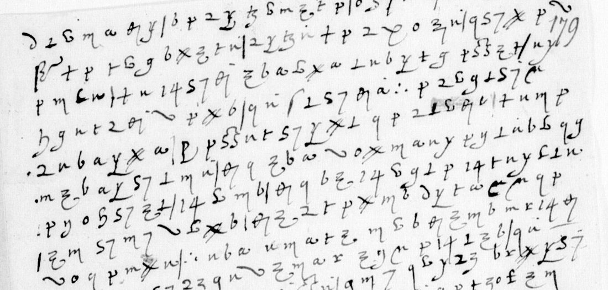

At a glanceKnown key applied · partial: f. 276 reads and f. 179 builds sentences at 90.6% of its words (1,243 of 4,079 signs); the despatch decoded, not read
- The letters
- Two unsigned, unaddressed slips wholly in cipher, from 1586, both naming Iehan Durant and La Roussière. A six-page despatch wholly in cipher, autumn 1586, to Henri III and probably from Marshal Matignon.
- Where
- Bibliothèque nationale de France, fr. 15572 f. 276, fr. 15571 f. 179 and fr. 15573 ff. 379–381 (Gallica). The two slips were part of catalogue item 12 with the Mayenne–Forget despatches, which are in other ciphers.
- The cipher
- Matignon’s Cipher-3: invented signs and figures for letters, a few signs for whole words (de, la, que, et) and a null.
- How it was deciphered
- Satoshi Tomokiyo published a partial table of the key. alejandrozarco checked it against a sibling leaf and its contemporary decipherment, then read both slips sign by sign, twice and independently. f. 179 also carries Tomokiyo’s own decipherment, written over his image of it.
- What it says
- On f. 276, Catholic factions round La Roussière, governor of Fontenay, and a disputed priory. On f. 179, a plan to attack Pons, sickness in the army, and Lansac for the fleet. The despatch reports on the Garonne trade the Huguenots tax, Castillon, Marmande and the King of Navarre.
- Still open
- On the slips, three one-sign code words, two blots and a few faint signs; with them f. 179 reads at 90.6% of its words (measured 24 October 2026), under 95%. In the despatch, the code signs and about 45 words whose signs are clear but give no word under the key; after two re-readings on 23 October 2026, 36 of its 61 sentences are clean (0.59, the bar is about 0.60), so the despatch stays decoded, not read, with a partial reading and English.
- Credit
- The slips are alejandrozarco’s work (pull request 25, October 2026); the despatch is Brett Burford’s (issue 44, October 2026). Both were reviewed and re-measured here.
- Other ciphers
- The Mayenne–Forget despatches filed with these slips use Cipher-1; that entry is still in progress (
targets/matignon1586/). Matignon’s despatch of May 1586 from Monségur is in Cipher-2, with its own page: Mayenne–Forget’s Cipher-2.
01 The leaves
BnF fr. 15572 and fr. 15571 hold the papers of the Guyenne war of 1585–86 round Mayenne, Matignon and Forget de Fresnes. Satoshi Tomokiyo (cryptiana, Henry III’s Cipher with Ambassadors) lists ten leaves there with no known decipherment, in two ciphers: Mayenne–Forget’s Cipher-1 and Matignon’s Cipher-3. Until 14 October 2026 the project kept them as one entry. Each cipher is now its own entry, and this page covers the two Cipher-3 leaves. A third Cipher-3 document, a six-page despatch in fr. 15573, came in with Brett Burford’s reading in October 2026 (section 04).
| Leaf | Gallica | Lines | Signs | Read (measured) | How |
|---|---|---|---|---|---|
| fr. 15572 f. 276 | btv1b9061879d, canvas 285 right | 22 | 734 | 706 (96.2%) | Tomokiyo’s table applied, checked and extended |
| fr. 15571 f. 179 | btv1b90618802, canvas 187 left, bound upside down | 21 | 509 | 473 (92.9%) | Tomokiyo’s interlinear decipherment, checked with his key |
| fr. 15573 ff. 379r–381v | btv1b90618780, views 740–745 | 127 | 2,836 | 2,540 (89.6%) | Tomokiyo’s table with values from a deciphered 1585 letter (Burford) |

02 The key
Tomokiyo’s partial table is a homophonic letter substitution with word signs: 60 faire, a β-like sign de, 20 la, 18 le, a p with a stroke pour, a C with n que, ∴ qui, and plain v a null. alejandrozarco checked it on a sibling that was deciphered at the time: ff. 277r–278r, whose decipherment is on ff. 279–280. A transcriber who never saw the values copied f. 277r by shape, and a hard-EM alignment matched that copy to the clear text. 1,271 signs aligned to letters and 55 word signs to their words, and for every frequent sign the table’s value is the one the alignment picks.
The two slips added values that the table lacks. Three crossed strokes, ###, are et: the sign occurs eight times, always between words. Some columns of the table split in two (a z-topped hook is i, a reversed hook o). A hooked ρ is i, a dotted v is u, and a C with ε inside is q.
03 What they say
f. 276, in alejandrozarco’s reading (16th-century spelling, word division his):
La Guiolle est en doubte du Puy pour les amis de La Rousiere, [qui] sont en grand nombre avec luy, dont il y en a qui veullent mal a Polidor. La Saussaie a soing de lui […] a secouru de ce qu’il a peu vos amis de la Madeleyne. … Le Pui est ennuyé de la guerre, et neaulmoins redoute la […] …
It is a Poitou intelligence note on the Catholic factions round La Roussière, Henri III’s governor of Fontenay(-le-Comte) from 1582 to 1587, and on a priory promised to one Aubois. Its first line matches the opening Tomokiyo published.
fr. 15571 f. 179 continues with the same people. Frontin will come to terms with La Roussière’s children; the plan is now to attack Pons, il se poura prendre en ung mois. The writer fears the sickness among the foot will spread, and a long rest would then be needed before the army could serve again. Iehan Durant is to be written to pour employer Lansac en … l’armée de mer; il n’y est propre. The siege and the sickness fit the plague in Mayenne’s and Matignon’s army round Castillon in August–September 1586, but that is not established.
04 The despatch
BnF fr. 15573 ff. 379r–381v is a despatch of autumn 1586 written wholly in cipher over six pages and addressed to the King. Tomokiyo lists it as having no known decipherment and as written in Matignon’s Cipher-3, and he prints its first line. The sender’s name is not in the readable text, so “probably Matignon” rests on the cipher and the content.

Brett Burford published a decipherment of the whole despatch on 18 October 2026 (his search of code hosts, cryptiana, Cryptoole and the web found none earlier beyond Tomokiyo’s first line) and brought it to version 0.5 the next day. Claude Opus 5.5 named every sign under a reference sheet of 50 shapes cut from the sibling f. 277r. Five passes were voted, and a correction was kept only where two blind asks agreed and the image showed the sign. On a stretch of f. 278r with a known answer, the voted reader got 96% of signs right.
The key is Tomokiyo’s table, checked against the decipherment of ff. 277–278 on ff. 279–280. Burford also aligned another Cipher-3 letter that was deciphered at the time, fr. 15570 ff. 271–272 of September 1585, against its decipherment on f. 273. That gave six new values: a long zigzag is ss, a circled 9 is par, a d is vostre, and three more are marked doubtful. A word decoder chose one value at each two-valued sign, and his files record every choice.
The readable stretches are a military report on the Guyenne campaign. They cover the Garonne between Toulouse and Bordeaux, where the Huguenots tax the river trade, and Caumont and the Mas de Verdun. They also name Castillon, the Isle and the Dordogne, the King of Navarre, “your sister” at Agen, the artillery brought out of Navarrenx, Marmande, and fifteen to sixteen thousand crowns.
The reading was re-measured here with the same rule as the two slips: 2,540 of 2,836 signs (89.6%) fall in runs of period French, against a median of 6–10% for shuffled keys. Runs of French are not sentences. Read as sentences in the reading audit of 22 October 2026, Burford’s unpunctuated decode had a garbled word in nearly every sentence and no translation, so it was classed decoded, not read.
On 23 October 2026 the decode was divided, punctuated and translated word by word, every departure from the key’s letters bracketed (f379_381/ff379-381_reading.md, ff379-381_en.md). A second pass the same day re-read every break on the full-size views 740–745: one label corrected (a “p” on f. 379v l. 3 is bleed-through), five second values that recur across the despatch and a few look-alike alternates (28 letters of about 2,300), and a word-by-word check that each unbracketed word is carried by its signs. The neighbouring folios (views 724–757) hold no clear copy or decipherment. The partial reading opens:
[…] a ce qu’il pliaist a vostre maieste me […] luy doner advis pour lettre de vostre armee […] veu la saison qui est proche de l’iuer, et que il n’y a rien qui incomode tant c[e] pays que les places qui sont sur la riuiere de Garone entre Tolouse [?et] [?Bourdeaulx], dont ceulx de la [?nouuelle] religion tirent de grandes daces sur les marchandises
It names Sainte-Bazeille, where the King of Navarre’s commissions levy tolls, Caumont and the Mas de Verdun, and Bergerac, Sainte-Foy and Castillon, and advises clearing the river before besieging a strong place. Scored as sentences, 36 of 61 are clean (0.59, with 0.60 the bar). Other documents at 0.59–0.597 were kept unread, so this one stays decoded, not read: f. 379r and the end build sentences, while f. 379v ll. 17–21 and f. 380r ll. 1–2 and 18–22 are weak. About 45 words have clear signs that give no word under the key; Matignon’s minutes (Monaco, J 41) have not been looked at.
05 How the reading was checked
- Two independent reads of each slip. Two readers worked sign by sign, each with only the table. They agree on 693 of 739 signs on f. 276 (93.8%) and 472 of 516 on f. 179 (91.5%). Every disagreement that changes the sense was settled on the image.
- Measured coverage. A sign counts as read only inside a run of at least three words of a period lexicon, the shared model
fr-1600-letters. f. 276 gives 706 of 734 signs, f. 179 gives 473 of 509. Both figures were re-run after the split and are unchanged. Counted word by word on the written-out reading (24 October 2026), f. 179 reads at 90.6%: its sentences hold, but under the 95% a complete reading needs. - Shuffled keys. With the letter values shuffled, 50 random keys give a median of 6.9% on f. 276 and 3.5% on f. 179.
- External agreement. Tomokiyo’s published opening of f. 276 and his magenta decipherment of f. 179 agree with the reading. So do the contemporary glosses over two lines of f. 276, where they can be read.
06 What stays open
- Three one-sign code words, each used once: on f. 276 a large K (redoute la [K]: paix? Ligue? Royne?) and a C with o inside (en temps de […]), and on f. 179 an ω with an overbar, probably a person. The deciphered Cipher-3 siblings (f. 189 in f. 190, f. 282, fr. 15570 ff. 271–273) have not been searched for them.
- Two blots (f. 276 line 4, f. 179 line 18), the closing of f. 276 and de la D[…]use on f. 179, and a few short spans.
- In the despatch: five rare code signs that occur in no deciphered Cipher-3 letter found so far, five short runs of clear signs not yet deciphered, and doubtful words and names (Burford’s list explains 110 of 115 items).
- Who wrote the two slips, and to whom; whether Matignon wrote the despatch.
Full texts
The transcription and the decryption of every document on this page, so that the reading can be used and checked. Short files are shown here; all are in the repository.
fr. 15572 f. 276, 1586 (alejandrozarco, PR #25)
A Poitou intelligence note on the Catholic factions round La Roussière, Henri III's governor of Fontenay(-le-Comte): La Guiolle unsure of Le Puy, La Saussaie, the priory promised to Aubois, the sieurs de la Fontaine, la Chaie and Mirebeau; 'Le Pui est ennuyé de la guerre'. Writer and recipient are not named. The transcriptions are the two independent sign-by-sign reads (one letter per sign).
Transcription
L01: =la g u i o ll e e s t e n d o u b t e d u p u =pour =le s a m i s =de L02: =la r o u s s i e r e s o n t e t g r a n d n o m b r e a u e c l u y d o n L03: i l p e n/t n/a =qui u e u ll | ll e n t m a l a p o ll i d o r =la s a u s a i e n/a s L04: l? e g =de l u p ? a s e c o u r u =de c e =qui l a p e u m o s n/a m i ? =de =la m n/a L05: d e l e ?p n e f o n t c o u r i r =le b r u i t =que =la c h a m b r e r ? L06: f r e r e =de =la m a r e o n t a u s p? b o n e i n t e ll i g e n c e =qui l l L07: e u r e n t i a m a i s s e o s e d o i b u e n t b i e n t o s t a s e m b L08: l e r a u p r e i u d i c e =de f r o n t a i ? =que =le p r o c u r e u r r L09: s o n f i l s e n t a p r o m i s a u b o i s =le r e m e ? r e e n p o L10: c e s i o n d u p r i e u r e c e =que =la s a u s a i e n e p e u l t c r o L11: i r e e n c o r =qui l s e e s c r i u e n t s e n a s e u r a n t =que =le s s i e L12: u r s =de =la f o n t a i n e =la c h a i e r m i r e b e a u r s o n p r L13: o c u r e u r a/n u s =que a/n s/p i l s e f i e =qui l l n e u o u d r o i e n t L14: p e r m e ? r e m e s m e s e n t e m p s =de u/=que =qui l f e u s t =de a o/p L15: e/s e d e d u p r i e u r e ### s u r t o u t i l s u n l i e u =le b o L16: i s ### l u o n o a i e n t =que =de s m e s l e r e n s e m b l e =de ? ? ? L17: =le p u o [struck] e s t e n n u i e =de =la g u e r r e ### n e a u l m o L18: i n s r e d o u t e =la e e/c u e l =que c h o s e =qui l s e f a c e i l e s t L19: b e s o i n g d =le b i e n =de m a i s t r e i e h a n d u r a n t s o i t L20: p a i x o u g u e r r e =que l o n e s l o i g n e =la m a r =que/u c a r c L21: e s t =le l o g i s =que =de s i r e n t =le s a m i s =de =la m a r e ### =de =la r L22: o u s/e i e r e ? o ? ?
Transcription
L01: =la g u i o ll e e s n/t e a/n d o u b n/t e d u p u =pour =le s a/n m i s =de L02: =la r o u s i e r e s o a/n t e n/t g r a n/t d a/n o m b r e a u e c l u ? d o a/n L03: i l ? e n/t a/n =qui u e u ll e n/t n/t m a/n l a p o ll i d o r =la s a/n u s a i e a/n s ? L04: i/r n/t g =de l u ? [blot] a s e c o u r u =de c e =qui l a p e u x o s a/n m i s =de =la m a/n L05: d e l e ? a/n e f o n t c o u r i r =le b r u i n/t =que =la c h a m b r e ### L06: f r e r e =de =la m a/n r e o n/t n/t a/n u e ? b o n e i n t e ll i g e n c e =qui l l L07: e u r e a/n t i a/n m a/n i s s o l s e d o i b u e n/t t b i e n/t n/t o s n/t a/n s e m b L08: l e r a u p r e i u d i c e =de f r o o t i o u =le p r o c u r e u r ### L09: s o a/n f i l s o n/t t p r o m i s a u b o i s =le r e m e t r e e a/n p o L10: c e s i o a/n d u p r i e u r e c e =que =la s a/n u s a i e a/n e p e u l n/t c r o L11: i r e e a/n c o r =qui l s e e s c r i u e [blot] s e a/n e/s e u r a a/n t =que =le s s i e L12: u r s =de =la f o n t a i a/n e =la c h a e/s e ### m i r e b e a u ### s o a/n p r L13: o c u r e u r a/n u s =que l s i l s e f i e =qui l l a/n e u o u d r o i e n/t t L14: p e r m e t r e m e s m e s e a/n n/t e m p s =de ? =qui l f e u s t =de p o L15: s e d e d u p r i e u r e ### s u r n/t o u t i l s u ? l i e =que =le b o L16: i/r s ### l u ? a/n p a i e n/t t =que =de s m e s l e r e a/n s e m b l e =de ? [ou] ? L17: =le p u ? [struck] e s n/t e n/t a/n u i e =de =la g u e r r e ### a/n e a u l m o L18: i n/t s r e d o u n/t e =la e e u e l =que c h o s e =qui l s e f a c e i l e s n/t L19: b e s o i a/n g d =le b i e u =de m a/n i s n/t r e i e u a n/t d u r a/n n/t s o i n/t L20: p a/n i x o u g u e r r e =que l o n/t e s l o i g a/n e =la m a/n r =que c a/n r c L21: e s n/t =le l o g i s =que =de s i r e n/t t =le s a m i s =de =la m a/n r e ### =de =la r L22: o u s i e r e ? ? [ou] + flourish
Decryption
# f.276 reconciled reading: read 1 with the image-checked corrections listed in SOLUTION.md L01: =la g u i o ll e e s t e n d o u b t e d u p u =pour =le s a m i s =de L02: =la r o u s i e r e s o n t e n g r a n d n o m b r e a u e c l u y d o n L03: i l i e n a =qui u e u ll e n t m a l a p o ll i d o r =la s a u s a i e n/a s L04: i n g =de l u i ? a s e c o u r u =de c e =qui l a p e u u o s a m i s =de =la m a L05: d e l e y n e f o n t c o u r i r =le b r u i t =que =la c h a m b r e ### L06: f r e r e =de =la m a r e o n t a u s i b o n e i n t e ll i g e n c e =qui l l L07: e u r e n t i a m a i s s e o s e d o i b u e n t b i e n t o s t a s e m b L08: l e r a u p r e i u d i c e =de f r o n t a i ? =que =le p r o c u r e u r ### L09: s o n f i l s e n t a p r o m i s a u b o i s =le r e m e t r e e n p o L10: c e s i o n d u p r i e u r e c e =que =la s a u s a i e n e p e u l t c r o L11: i r e e n c o r =qui l s e e s c r i u e n t s e n a s e u r a n t =que =le s s i e L12: u r s =de =la f o n t a i n e =la c h a i e ### m i r e b e a u ### s o n p r L13: o c u r e u r a/n u s =que a/n s/p i l s e f i e =qui l l n e u o u d r o i e n t L14: p e r m e t r e m e s m e s e n t e m p s =de u/=que =qui l f e u s t =de p o L15: s e d e d u p r i e u r e ### s u r t o u t i l s u n l i e u =le b o L16: i s ### l u i n o a i e n t =que =de s m e s l e r e n s e m b l e =de ? ? ? L17: =le p u i [struck] e s t e n n u i e =de =la g u e r r e ### n e a u l m o L18: i n s r e d o u t e =la ? q u e l =que c h o s e =qui l s e f a c e i l e s t L19: b e s o i n g d =le b i e n =de m a i s t r e i e h a n d u r a n t s o i t L20: p a i x o u g u e r r e =que l o n e s l o i g n e =la m a r =que/u c a r c L21: e s t =le l o g i s =que =de s i r e n t =le s a m i s =de =la m a r e ### =de =la r L22: o u s/e i e r e ? o ? ?
Decryption
# Matignon's Cipher-3, BnF fr. 15572 f. 276 (1586): read
Catalogue item 12, the Cipher-3 leaf. `targets/matignon1586/NOTES.md` listed it as "blocker: not-attempted; not transcribed" (coverage
table: 0 / ~27 lines). This contribution is dated 6 Oct 2026.
**Result: f. 276 deciphered with Tomokiyo's key (method: read with known key): 706 of 734 signs (96.2%), measured.**
- **Measurement.** `scripts/measure.py` follows the `targets/matignon1586/measure.py` rule: lines are joined; a sign counts as read only
inside a run of at least 3 lexicon words totalling at least 10 letters; a word is lexical if it occurs at least 20
times in the corpus of the shared `lang/` model `fr-1600-letters` (source `fr-henri4`, Berger de Xivrey, *Lettres
missives de Henri IV*, t. I–V), normalised with the model's `early` scheme, fetched through `lang.corpora`.
- **Unkeyed signs.** An unkeyed sign (`?`) inside a run is the rule's CONTEXT token: it doesn't break the run and is
never counted read. `targets/matignon1586/measure.py` lets the language model supply its letter; here it simply passes through,
which is an approximation.
- **Control.** The scrambled-key floor is 6.9% (median of 50 shuffles; maximum 29.3%). Chance-corrected, that is 95.9%.
- **Agreement.** Two sign-by-sign readings, made independently, agree on 693 of 739 signs (93.8%,
`scripts/compare_reads.py`).
- **The measured text.** `read_final.txt` is read 1 with the image-checked corrections listed under Method.
- **What stays open** is listed at the end: a blot, two signs not in the table, the closing, and a few short spans.
- **Sibling leaf.** fr. 15571 f. 179 is in the same cipher and names the same people; see `../f179/SOLUTION.md`.
The leaf is Gallica `btv1b9061879d`, canvas 285 (right page). It is a small slip of **22** cipher lines. The
coverage table's "~27" was an estimate. Images are not included.
## Clear text (16th-c. spelling; word division and punctuation ours; […] unread, [?] doubtful)
> La Guiolle est en doubte du Puy pour les amis de La Rousiere, [qui] sont en grand nombre avec luy, dont il y en a
> qui veullent mal a Polidor. La Saussaie a soing de lui […] a secouru de ce qu'il a peu vos amis de la Madeleyne.
> [Ils] font courir le bruit que la Chambre et frere de la Mare ont ausi bone intelligence qu'ils l'eurent iamais, et se
> doibuent bientost assembler au preiudice de Front[enay?]. Le procureur et son fils ont promis Aubois le remettre en
> possession du prieuré, ce que La Saussaie ne peult croire, encor qu'ils se escriuent, s'en asseurant que les sieurs
> de la Fontaine, la Chaie et Mirebeau et son procureur, ausquels il se fie, ne voudroient permettre mesmes en temps
> de […] qu'il feust deposedé du prieuré; et surtout il supplie que le Bois et lui n'[…]aient que de se mesler
> ensemble […]. Le Pui est ennuyé de la guerre, et neaulmoins redoute la […]; quelque chose qu'il se face, il est besoing de
> le bien de maistre Iehan Durant, soit paix ou guerre, que l'on esloigne la Mar[e?], car c'est le logis que desirent
> les amis de la Mare et de la Rousiere […].
**English, loosely.**
- **Factions.** La Guiolle is unsure of Le Puy because of La Roussière's friends, who are many, and some of whom wish
Polidor harm.
- **La Saussaie.** He has taken care of him […], and has helped your friends at la Madeleine as far as he could.
- **Rumour.** They are spreading word that la Chambre and la Mare's brother are as thick as ever, and will soon gather
to the prejudice of Frontenay[?].
- **The priory.** The procureur and his son have promised Aubois to restore him to the priory. La Saussaie cannot
believe it, even though they write to each other. He trusts that the sieurs de la Fontaine, la Chaie, Mirebeau and
his procureur would not allow him to be dispossessed, even in time of […].
- **A request.** Above all he begs that le Bois and he […] mingle together […] (the sense of this line is unsure).
- **Le Puy.** He is tired of the war, yet fears […]. Whatever he does, for maistre Iehan Durant's good, in peace or
war, la Mare should be kept away: "car c'est le logis que desirent les amis de la Mare et de la Roussiere".
**Context.** A Poitou intelligence note among the Catholic factions round La Roussière, Henri III's governor of
Fontenay(-le-Comte) 1582–87. He surrendered the town to Navarre on 1 June 1587.
## Key
S. Tomokiyo's partial Cipher-3 table (cryptiana, *Henry III's Cipher with Ambassadors*). It is a homophonic letter
substitution with word signs:
- 60 *faire*, a β-like sign *de*, 20 *la*, 18 *le*, p-with-stroke *pour*, C with n *que*, ∴ *qui*;
- v is a null.
**Checked on the deciphered sibling ff. 277r–278r → 279r–280r.** We blind-transcribed the 37 cipher lines of f. 277r
by shape only: the transcriber never saw values (`crib/BRIEF_transcriber.md`, `crib/f277r_all.txt`). A hard-EM
alignment then matched that transcription to the contemporary decipherment (`crib/plain_all.txt`):
```
python scripts/align_em.py --cipher crib/f277r_all.txt --plain crib/plain_all.txt --iters 10
```
- **Overall.** 1,271 signs align to letters and 55 word signs to their words. The table's value is the top emission
for every frequent sign column; examples follow.
| sign column | table value | aligned as |
|---|---|---|
| C05r1 | e | e 106 of 149 |
| C16r1 | r | r 49 / 65 |
| C17r1 | s | s 40 / 48 |
| C19r2 | u | u 37 / 41 |
| W02 | de | *de* 26 / 31 |
| W03 | la | *la* 13 / 15 |
- **Agreement with the table.** 58% of all aligned events carry exactly the table value. The rest are mostly
transcription noise between similar rows (the blind transcriber's row ids are inconsistent), not key errors.
**Additions to the table, found on f. 276 and checked on the image:**
- **`###`** (three crossed strokes) = **et**.
- It occurs 8 times, always between words, and "et" fits every place: *la Chambre et frere*, *le procureur et son
fils*, *la Chaie et Mirebeau et son procureur*, *prieuré et surtout*, *guerre et neaulmoins*, *la Mare et de la
Roussiere*.
- Tomokiyo has a # in his r column, which this leaf does not support.
- **Split columns:** ζ (z-topped hook) = i but ɤ (reversed hook) = o; ꝫ (9 with a bar) = u but ʒ (closed 9) = t.
- **Other signs:** a small o with a diagonal tail = y; the crossed-A / ※ sign = i (L04, L16).
- **The f column's ∂ is f**, not o: *de Front…* in L08, against δ = o elsewhere.
- **ϱ with a hook below = i**, in five places: *il i en a* (L03), *de lui* (L04), *ausi bone* (L06), *lui n'…*
(L16), *le Pui* (L17; *du pu* in L01).
- **The dotted v = u** (*vos amis*, L04), although plain v is Tomokiyo's null.
- **Two-stroke # = i** (*Rous|iere*, L22), as against three-stroke `###` = *et*.
## Method
1. **Line crops.** The slip was deskewed (−5.25°). We cut 22 lines at a 134-px pitch into three overlapping crops
each.
2. **Read 1 and read 2.** Read 1 was done by hand for L01–02 and by two agents for L03–22. Read 2 was done by a third
agent that never saw read 1.
- Both used `BRIEF_reader.md`: the table, sign conventions verified on this hand, and the L01–02 worked example,
which matches Tomokiyo's published opening.
- Output is one letter per sign, with no smoothing into French.
- Files: `read1.txt`, `read2.txt`.
3. **Comparing the reads.** `scripts/compare_reads.py` gives the letter-level agreement and lists every disagreeing
span (44). We checked the spans that change the sense against the deskewed image:
- *et* (8 places);
- *sont en grand nombre* (y = n), not *et grand*;
- L03–04 *a soing de* (hook = o, ※ = i, y = n, 23 = g);
- L08 *Front…* (∂ f, ⊥ r, hooked o, y n, a t, then null v and *que*).
4. **A second image pass** made `read_final.txt`. Every change has a shape reason, not only a dictionary one:
- **Hooked ϱ = i:** L03, L04, L06, L16, L17.
- **L02:** *Rousiere* has one s (C-shaped u, ξ s, ζ i).
- **L03:** read 1's *ll | ll* was one sign copied at a crop overlap.
- **L04:** the dotted v is *vos*, and ζ ʃ is *amis*; *la Ma|deleyne* continues into L05, whose y-tailed o = y.
- **L09 and L14:** ∇ = t (*remetre*, *permetre*), which read 2 has too.
- **L14–15:** *de p|osedé* (ϱ δ, then ξ = s), as read 2 has.
## Checks (`scripts/`, standalone, Python 3)
| check | real key | shuffled keys |
|---|---|---|
| `measure.py read_final.txt 50` (the `targets/matignon1586/measure.py` rule, `lang` model `fr-1600-letters`) | **96.2%** (read 1 raw: 89.7%; read 2: 90.2%) | median 6.9%, max 29.3% |
| `control_shuffle.py read_final.txt 50`: letters inside lexicon words of ≥ 3 letters | **68.3%** | median 6.6%, max 18.3% |
| `compare_reads.py read1.txt read2.txt`: two independent reads | **93.8%** of signs agree | – |
The shuffles permute the letter values among the signs. The word signs stay as they are, which is conservative.
**External agreement:**
- **Tomokiyo's opening.** The L01–02 opening matches his published opening (*La Guiolle est en doubte du pu pour
les amis de la Roussiere…*).
- **Interlinear glosses.** The contemporary glosses over L11 and L13 agree where they are legible.
- **People and places.**
- La Roussière was governor of Fontenay.
- Frontenay (Frontenay-Rohan-Rohan, near Niort) and Mirebeau are Poitou places.
- La Saussaie, la Mare, Aubois, La Guiolle, la Chaie, Polidor and Iehan Durant were not found online. They are
presumably local gentry and officers, for the Vendée or Deux-Sèvres archives or the *Archives historiques du
Poitou*.
## Open
- **The 28 unread signs:**
- L04: a blot after *de lui*;
- L14: *en temps de* [one sign not in the table: a C with o inside];
- L18: *redoute la* [a large K, not in the table];
- L16: the last three signs;
- L22: the closing, with one or two signs, then plaintext *ou…* and a flourish;
- L08: one sign of *Front[…]*.
- The rest are words the period lexicon holds fewer than 20 times: *prieure, escriuent*.
- **L20:** *la Mar[e?]*, or Mareuil.
- **Next target:** fr. 15571 f. 179, the other Cipher-3 leaf. The same table and conventions should read it, and
Tomokiyo's image carries an interlinear decipherment to check against.
## The two signs not in the table (7 Oct 2026)
- **L18, the K.** The signs after *la* are K, then a C with ε inside, then 87 ʞ +, then a C with a small u inside,
then 2 19 ϱ b ʞ.
- This reads *[K] | q u e l | que | c h o s e*: "redoute la [K]; quelque chose qu'il se face…".
- So the C with ε inside is **q**, a new value. The readers had split it into *e e/c u e l*, and it is corrected
in `read_final.txt`.
- The K stands alone between *la* and *quel*: a one-sign code word, feminine after *la*.
- Candidates: *paix* ("Le Puy est ennuyé de la guerre, et neaulmoins redoute la paix"), *Ligue*, or *Royne*.
Catherine de Médicis was negotiating with Navarre near Cognac (Saint-Brice) from October 1586.
- *paix* and *guerre* are also spelled out in letters in L17 and L20, so a code for one of them would be a variant,
not the only form.
- **L14, the C with o inside.** "ne voudroient permettre mesmes en temps de [C-o] qu'il feust deposedé du prieuré".
- It belongs to the same C-family as the C with u (= u), the C with n (= *que*) and the C with ε (= q). That
suggests the C marks a group of related signs rather than one letter.
- Context wants *paix*, *guerre* or *trouble(s)*. If K is *paix*, the C-o would be another word.
- Neither sign recurs on f. 276 or f. 179, so neither can be fixed from these two leaves. The Cipher-3 siblings
with contemporary decipherments (f. 189/190, f. 282 margin, fr. 15570 ff. 271–273) are where to look.
## Files
- **Root:**
- `read1.txt`, `read2.txt`: the two sign-by-sign readings, one letter per sign.
- `read_final.txt`: read 1 with the image-checked corrections; this is the measured text.
- `BRIEF_reader.md`: the brief both reads used.
- **`crib/`:**
- `f277r_all.txt`: value-blind transcription of f. 277r.
- `plain_all.txt`: ff. 279r–280r transcribed.
- `key_em_all.tsv`: the alignment's key.
- `chart_values.tsv`: the chart-id → value map, which the transcriber never saw.
- `BRIEF_transcriber.md`.
- **`scripts/`:**
- `align_em.py`, `compare_reads.py`;
- `measure.py`, `control_shuffle.py`: they use `lang` (`lm.registry`, `lm.norm`, `corpora.text`). No word list is
bundled.Reading
# Matignon's Cipher-3, BnF fr. 15572 f. 276 (1586): reading The "Clear text" of `f276/SOLUTION.md` (the plaintext of the cipher, deciphered with Tomokiyo's key, reconciled reading `f276/read_final.txt`), copied here alone 23 Oct 2026 (translation wave v7) so that it is scored and translated without the method and notes. Its marks: 16th-century spelling; word division and punctuation the contributor's; `[…]` unread, `[?]` doubtful, `[x]` letters supplied. The whole leaf is in cipher. French. ## Reading La Guiolle est en doubte du Puy pour les amis de La Rousiere, [qui] sont en grand nombre avec luy, dont il y en a qui veullent mal a Polidor. La Saussaie a soing de lui […] a secouru de ce qu'il a peu vos amis de la Madeleyne. [Ils] font courir le bruit que la Chambre et frere de la Mare ont ausi bone intelligence qu'ils l'eurent iamais, et se doibuent bientost assembler au preiudice de Front[enay?]. Le procureur et son fils ont promis Aubois le remettre en possession du prieuré, ce que La Saussaie ne peult croire, encor qu'ils se escriuent, s'en asseurant que les sieurs de la Fontaine, la Chaie et Mirebeau et son procureur, ausquels il se fie, ne voudroient permettre mesmes en temps de […] qu'il feust deposedé du prieuré; et surtout il supplie que le Bois et lui n'[…]aient que de se mesler ensemble […]. Le Pui est ennuyé de la guerre, et neaulmoins redoute la […]; quelque chose qu'il se face, il est besoing de le bien de maistre Iehan Durant, soit paix ou guerre, que l'on esloigne la Mar[e?], car c'est le logis que desirent les amis de la Mare et de la Rousiere […].
Translation
# Matignon's Cipher-3, BnF fr. 15572 f. 276 (1586): English translation Translation (Claude Opus 5.5, 23 Oct 2026) of `f276/f276_reading.md`, the plaintext of the whole cipher leaf (Tomokiyo's key). Same holes: `[…]` unread, `[?]` and `[?word]` doubtful, `[x]` supplied. Names as in the original. ## Translation La Guiolle is in doubt of Le Puy because of the friends of La Rousière, [who] are in great number with him, of whom there are some who wish Polidor ill. La Saussaie takes care of him […] has helped your friends of la Madeleyne with what he could. [They] are spreading the rumour that la Chambre and the brother of la Mare are on as good terms as they ever were, and are soon to assemble to the prejudice of Front[?enay]. The procureur and his son have promised Aubois to put him back in possession of the priory, which La Saussaie cannot believe, although they write to each other, being assured that the sieurs de la Fontaine, la Chaie and Mirebeau, and his procureur, in whom he trusts, would not allow, even in time of […], that he should be dispossessed of the priory; and above all he begs that le Bois and he should n[…] but mingle together […]. Le Pui is weary of the war, and nevertheless fears the […]; whatever he does, it is necessary for the good of maistre Iehan Durant, be it peace or war, that la Mar[?e] be kept away, for that is the lodging which the friends of la Mare and of la Rousière desire […].
fr. 15571 f. 179, 1586 (alejandrozarco, PR #25) read in part
Frontin is to come to terms with La Rousière's children; the writer is resolved to attack Pons, 'il se poura prendre en ung mois'; sickness among the foot; 'employer Lansac en ... l'armée de mer'. The siege and the sickness fit, without being established, the plague in Mayenne's and Matignon's army round Castillon (Aug-Sept 1586); Tomokiyo's interlinear decipherment was the check.
Builds coherent sentences, but under the read bar of 95% of words read as sense (91% here); the holes are marked in the reading.
Transcription
f.179 -- sign-by-sign reading A (Matignon Cipher-3)
Key used: henryiii_Matignon3.png + brief conventions. One letter per cipher sign; "/" between alternatives; ? = unmapped.
Working sign values (how I mapped the recurrent shapes):
o(small circle)=a ȶ(p/t-like with loop, the key's ꝑ)=a ŋ(h with tail)=a η(7-like / small n with long leg)=a
ſ(long s)=b 2=c ⱬ(heavy 2 / hooked ⊥)=r m(plain)=d ℒ(L with top loop, no bar)=d
£(pound sign with crossbar, L12/L18)=e ṅ(small n/u-shape)=e ʞ(small r/x-shape)=e ζ(ξ, Z-shape with curl)=e
∂=f 7=g 23 / 2+3=g f3/t3-ligature=m ∿(tilde with loop)=m 30 (incl. "ʒo")=m
θ(crossed ∂ with tail)=i X(crossed, double stroke)=i
9 with straight tail (q-shape)=l +=l capped ſſ/ʂʂ=ll
ɱ(m with descender)=n y=n/t
δ / ȣ=o YL(Y over a heavy L-base)=o 6=o Ƶ(Z with tail)=o
14=p 4 (in 14 only) ϱ/ℊ(loop-p with hook below)=p 8=p
⊥=r ŧ(t-shape)=r b=s 4(alone)=s a(cursive a)=t ω=t
57=u ʒ(3 with long tail, alone)=u ꝗ(9 with tail hooking left, the "g" of the box)=u (box: u/t/n)
word signs: β with tilde=de P with curl / ꝑ-L=pour C enclosing n=que ∴=qui big heavy C (no n)=u? (box "u" C; maybe null)
| and / = separator
L01: f r o n t i n/t | s a c o m o d e r a | a u e c | ? p s e n f a n/t
[f r o n t i n | s'acomoder a | avec | ? p s enfant]
L02: =de l a r o u s i e r e | c o m e l a c o a u/s e | l u i a m
[de la rousiere | come la coa?e | lui a m]
L03: a n u t | l e p u i e s t d i t r e s o l u a l l e r | e n/t
[an ut | le pui est dit resolu aller | en]
L04: a u e r c i m a i o | l e b c u i t =qui a c o u r u =que
[a u e r c i m a i o | le b cuit qui a couru que]
L05: c e s t o i t | =pour a l l e r u o i r l a c r o i x? | l e n a
[c'estoit | pour aller voir la croix? | l'en a]
L06: d e s t o u r n e | i l e s t m a i n t e n a n/t r e s d l u
[destourne | il est maintenan(t) res d lu]
L07: a n/t a a u e r | p o n s | i l s e p o u r a p r e n d r e
[a n a a u e r | pons | il se poura prendre]
L08: | e n u n g m o i s | i e c r a i n s f o r t u? =que l a
[en ung mois | je crains fort (u?) que la]
L09: m a l a d i e | =qui? e s t | e n t r e n o s i e n s d e p i
[maladie | qui est | entre nos siens de pi]
L10: d/e | n e a u g u e m e n t e e a =que a p r e s | l e
[(d) | ne augue ment e e a que apres | le]
L11: s i e g e i r n e f a i l l e | u n o l d n/t g s e | i e o u
[siege ir ne faille | u n o l d n g s e | ie ou]
L12: r p r e m i e r | e s =que r e m e c t r e l a r m e e n
[r premier | es que remectre l'armee en]
L13: e s t a | s n/t =de s e r u i r | s p e n d a n/t a =que t n e
[esta | s'n de servir | spendant a que t ne]
L14: g a i g n e g r a d t p i e d e n l a g u a s c
[gaigne gra(n)d pied en la Guasc-]
L15: o n g n e | l a r e s p o n c e =que n o u s f e r e o
[-ongne | la responce que nous fere o]
L16: r? r e n d r a t o u s s? s a g e s | l o n e c r i r p
[? rendra tous sages | l'on ecrir p]
L17: a i e g | ? a n d u r a n/t | =pour e m p l o i e r
[a i e g | ? andurant / ? a durant | pour employer]
L18: l a n/t o a c | e n ? l a r m e d e m e r | i l
[la noac | en ? l'arme(e) de mer | il]
L19: n i e s t p r o p r e | l e c o m m a n d e u r
[n'i est propre | le commandeur]
L20: d e l a d n/t u s e i p o ? u r o i e t s e r
[de la d?use i po?ur oiet ser]
L21: u i e
[uie]
Unmapped / uncertain signs and where they occur:
- L01: "ɾ8" pair (an r/ɾ-hook joined to 8) after the separator before "s e n f a n": read 8=p, first element ? (maybe a separate sign or part of 28).
- L01: first sign "∂" read as f (∂=f); it could be the key's i-sign "ꝺ" (shapes very close).
- L02: "ʒ" with a long straight stem (3 over a vertical) in "c o a ? e": u (3) or s (key's lower-row "3 over |" in the s column).
- L03, L08: big heavy C with no n inside (L03 before ω, L08 before =que): box value u; could be a null.
- L04: "ſ" long slanted stroke with hook after "l e": read b (ſ=b), but it may just be a separator.
- L05: the small hooked sign after "c r o i" (ɩ-like): read x? (key x = v); uncertain.
- L06/L03/L07/L13/L16/L17/L19/L11: the L-with-loop sign read d (ℒ). The barred pound-sign "£" in L12 and L18 read e ("l a r m e e n", "l a r m e"); L10 line-initial heavy Ł is ambiguous d/e.
- L09: ".:ı" after "/" (dots and a small stroke): read =qui (∴) with a question mark.
- L10: "23" read g (key g: 23); "a u c u ..." with 2=c and ʒ=u would also fit, giving "aucunement" if ꝗ=n.
- L13: ω with an overbar (ϖ) after =que: read t (ω=t), uncertain.
- L16: line-initial "∠" (slanted ⊥ with no upright): read r?; "ƀ4" (b with stroke + 4-like tail) read s?.
- L16: last sign, a bold ρ: read p (same as the loop-p in L19 "propre"), could be a (ꝑ).
- L17: "Ɣ" with a loop and a curved tail before "a n d u r a n t": unmapped (?).
- L18: the sign after "e n" is covered by an ink blot (only a T-like top shows): ?.
- L20: "ɏ" (y with a crossbar) after "d": read y = n/t, uncertain; blotted sign after "p o" (crossed, with a descender): ?.
- General: ꝗ (9 with a left-hooking tail) is read as u throughout ("pourra", "nous", "resolu"). The box allows t or n, though, and n would give "aucunement" in L10.
- The Tomokiyo "Z-shaped -> o" value is used only for the distinct Z-with-tail sign (L11, L18). The common ζ/ξ curl sign is read e everywhere: it fits "aller", "pour employer", "commandeur" and "en un".Transcription
Reader B: independent sign-by-sign reading of BnF fr. 15571 f. 179 (Matignon Cipher-3)
Sources used: BRIEF_reader_f179.md, key/henryiii_Matignon3.png, f179/crops/*.jpg, f179/deskew.jpg only.
Sign values I applied (key + Tomokiyo leaf notes + f.276 conventions):
∂ = f θ (crossed ∂) = i ϱ / 9-with-looped-tail = i
⊥, ⊢ = r t-shape (ꞇ / ŧ) = r ʞ / x / r-like = e
ξ = e n/u-shape = e ₤ (L with two bars) = e (see notes)
δ, б, ϛ = o Z (y- or X-topped stroke over a long L base) = o
o-shape = a ꝑ = a η = a/n lone 7 = g/a (key lists 7 under both g and a)
"a"-glyph = t ω (w-shape) = t/e (see notes)
ɱ (m with descender) = n plain m = d £ (L with loop) = d Ꞁ (hooked ſ) = d
y = n/t ɏ (y with crossbar or loop) = n/t
b = s S-shape / 3-with-tail / 3-with-bar = s ſ = b
+ = l 9 = l/s 2 = c ɤ (stroke into loop) = h
14 = p 8 = p 4 = p/s Ⱡ (L with loop, P-shaped) = p
23 = g 13 = g/m 30 = m ∾ = m
57 = u ɡ (g with big closed lower loop) = u heavy C = u
C with n inside = =que ∴ = =qui ß-with-flourish = =de
X (with double slashes) = i
------------------------------------------------------------------------
L01: f r o n t i n/t | s a c o g/m o d e r a | a u e c | p s e n f a n/t t
[fronti(n/t) | s'aco(g/m)odera | avec | p s enfant]
L02: =de l a r o u s i e r e | c o g/m e l a c h a s/p e | l/s u i a m
[de la rousiere | co(g/m)e la cha(s)e | lui a m-]
L03: a n d t/e | r e p u i e s t d i t r e s o l u a s s e r | e n/t
[-and(e) | (r/d)epuis est dit resolu asser | en]
L04: ? u e r c i m a i o | l e b r u i t =qui a c o u r u =que
[? uercimaio | le bruit qui a couru que]
L05: c e s t o i t | p a s s e r u o i r l a c r o i ? | l e n d
[c'estoit | passer voir la croi? | le n d-]
L06: d e s t o u r n e | i l e s t m a i n t e n a n/t n/t r e s d l u
[destourne | il est maintenant resdlu]
L07: a u a o u e r | p o n s | i l s e p o l r a p r e n d r e
[auaouer | pons | il se polra prendre]
L08: | e n | u n g/a m o i s | i e c r a i n o f o r t t/e u =que l a
[en | un (g/a) mois | je craino fort ? u que la]
L09: m a l a d i t/e | =qui e s t e n t r e | n o s i e n s d e p i
[maladi(e) | qui est entre | nos iens de pi-]
L10: d | n e a u g u e m e n t e | e n/t =que a p r e s | l e
[d | n'auguemente | e(n) que apres | le]
L11: s i e g/a e i r d e f a i s s e | u n o l/s d n/t | g s e i o u
[siege ir de faisse | un o l/s d (n/t) | g sejou-]
L12: r p r e m i e p/s =que r e m e c t r e l a r m e e n
[r premie(p/s) que remectre l'armee en]
L13: e s t a | s u =de s e r u i r | s i e n d a n/t t =que ? n e
[est a | s(u) de servir | s'iendant que ? ne]
L14: g a i g/a n e g/a r a n t p i e d e n l a g/a u a s c
[gai(g)ne (g/a)rant pied en la (g)uasc-]
L15: o n g n e | l a r e s p o n c e u n o t s f e r e o
[-ongne | la responce u n o t s fere o-]
L16: r r e n d r a t o u s p/s | s a g/a e s | l/s o n e c r i r i
[rrendra tous (p/s) | sages | l'on ecriri(?)]
L17: a/n i e h a n d u r a n t | p e m p l o i e r
[(a/n)ie han durant | p employer]
L18: l a/n n/t s a/n c p/s | e n ? ? l a r m e d e m e r | i l
[l?ns ac? | en ?? l'armee de mer | il]
L19: n i | e s t | p r o u r e | l e c o m m a n d e u r
[ni | est | proure | le commandeur]
L20: d e | l a/n | d n/t u s e i p o ? g/a r o i e t s e r
[de | la | d(n/t)us e i po ? (g)roie t ser-]
L21: u i e
[-uie]
------------------------------------------------------------------------
Unmapped or uncertain signs, by location
1. L04, sign 1: an h-like sign whose descender sweeps down and to the left (ɧ). It does not match anything in the key or the notes, so I wrote ?. (It may be the key's third a-sign or an h-variant.)
2. L05, last sign before "|" (after "la croi"): a small c/ι-shaped hook (ɩ). I could not map it, so I wrote ?. The context suggests x, but no x-sign in the key matches.
3. L13, after "=que": an ω with a long bar over it (ϖ). I could not map it, so I wrote ?.
4. L18, after "e n": a T-shaped stroke followed by a heavy ink blot. These may be one or two signs, and both are illegible (? ?).
5. L20, after "p o": a sign struck through or blotted (over a 4- or ꝑ-like form). Illegible, so I wrote ?.
6. ω (w-shape, separate from the "a"-glyph): I gave Tomokiyo's value t, but e fits in L03 (a n d ω = "mande"?) and L09 (m a l a d i ω = "maladie"?). L08 (f o r ω = "fort") fits t. I wrote t/e each time.
7. The t-shape (ŧ with a crossbar) at the start of L03 after "|": I wrote r per Tomokiyo's note. The context (ŧ e p u i s) would fit d ("depuis").
8. 13-like sign (crossed 1 joined to 3), in L01 (s a c o _ o d e r a) and L02 (c o _ e): the key lists 13 under g, so I wrote g/m. Context suggests m (30) in both places.
9. ₤ (L with two crossbars), in L12 (l a r m ₤ e n) and L18 (l a r m ₤ | d e m e r): this is not the key's £ (d). Both times it comes after "larm", so I read it as e. That value is not confirmed by the key.
10. £ (low L with a loop on top), in L03 ×2, L06, L10, L11, L13 and L18-area: I read d (key column d). In L06 (r e s £ l u) and L03 (£ i t r e s), o would also make sense ("resolu", "o(u)tres"). Unresolved.
11. y with a closed loop at the bottom, in L07 (sign 2) and L13 (after "s"): I gave it ɡ's value u, but this is uncertain. It might be the n/t y-variant.
12. The o-shaped sign in L02 (c h o s e) and L07 (a ɡ o ϛ): I followed the convention o = a (which works for "avec" in L01 and "larme" in L18). In L02, o would give "chose".
13. Lone 7 (in L08, L11, L14 ×3, L16 and L20): the key puts 7 under both a and g, so I wrote g/a. Context favours g in L11 ("siege"), L14 ("gaigne", "Guascongne") and L16 ("sages").
14. L01: a thin lead-in stroke joins the "|" to the following 8. I treated it as part of the 8 (p), not as a separate r-sign. The last sign of L01 is cut off at the right edge of the image; I read it as an a-glyph (t).
15. L07 starts with two dots (:). I took them as punctuation or a mark, not as ∴ (=qui), and did not transcribe them as a letter.
16. L16, last sign: a ρ shape with a descender. I read it as ϱ = i, though it could be ꝑ (a), which would give "escrira".
17. L17, sign 4, and L02 (after "c"): ɤ, a stroke that runs into a loop with a descender. I read it as h (key h, first sign). The match is approximate.
18. In L08 (f o r ω C Cⁿ) and L15 (c e C ɱ ...), a heavy blotted C with a bar on top: I read it as u (key u, first sign). It might be a smeared que-sign.
19. Separators: every "|" and "/" stroke is transcribed as |. The overline on L11's final 57 is ignored.Decryption
# f.179 reconciled reading: read A with corrections from read B, the image and Tomokiyo's interlinear (see READING_f179.md) L01: f r o n t i n/t | s a c o m o d e r a | a u e c | l e s e n f a n/t s L02: =de l a r o u s i e r e | c o m e l a c h o s e | l u i a m L03: a n d e | d e p u i e s t d i t r e s o l u a l l e r | e n/t L04: a u e r c i m a i o | l e b r u i t =qui a c o u r u =que L05: c e s t o i t | =pour a l l e r u o i r l a c r o i x | l e n a L06: d e s t o u r n e | i l e s t m a i n t e n a n/t r e s o l u L07: a t a q u e r | p o n s | i l s e p o u r a p r e n d r e L08: | e n u n g m o i s | i e c r a i n s f o r t u? =que l a L09: m a l a d i e | =qui? e s t | e n t r e n o s i e n s d e p i L10: d/e | n e a u g u e m e n t e t =que a p r e s | l e L11: s i e g e i r n e f a i l l e | u n ? l o n g s e | i ? o u L12: r p r e m i e r =que r e m e c t r e l a r m e e n L13: e s t a | s n/t =de s e r u i r | s p e n d a n t =que ? n e L14: g a i g n e g r a n t p i e d e n l a g u a s c L15: o n g n e | l a r e s p o n c e =que n o u s f e r e o L16: r? r e n d r a t o u s s? s a g e s | l o n e c r i r a L17: a i e h a n d u r a n/t | =pour e m p l o i e r L18: l a n s a c | e n ? l a r m e d e m e r | i l L19: n i e s t p r o p r e | l e c o m m a n d e u r L20: d e l a d n/t u s e i p o ? u r o i e t s e r L21: u i e
Decryption
# Matignon's Cipher-3, BnF fr. 15571 f. 179: checked against Tomokiyo's decipherment
Catalogue item 12, the second Cipher-3 leaf. `targets/matignon1586/NOTES.md` listed it as "not-attempted; not transcribed". This
contribution is dated 6 Oct 2026.
**Result.** Method: read from an existing decipherment (Tomokiyo's interlinear), checked independently with his key.
Read in part: **473 of 509 signs (92.9%), measured**, against a shuffled-key floor of 3.5%.
**Leaf.** Gallica `btv1b90618802`, canvas 187, left page. The page is bound upside down and must be rotated 180°. It
has 21 cipher lines, all in cipher. Folio "179" is written at the top right; "191" (old foliation) is at the foot.
**Prior work.** S. Tomokiyo (cryptiana, *Henry III's Cipher with Ambassadors*) lists it as "undeciphered" but adds
"Uses Matignon's Cipher-3, which allows deciphering (see the image)". His image (`BnFfr15571f179.jpg` on cryptiana, 680 px)
carries an interlinear decipherment in magenta and margin notes on sign values: Z→o, ξ→e, n→e, t→r, X→j, L→p, ω→t.
- He never published it as text.
- The upstream `targets/matignon1586/NOTES.md` calls it "not yet transcribed or checked".
- So this leaf is in effect already read by Tomokiyo, and our work is an independent transcription and check.
**Method.**
1. Rotate, crop and deskew the page (−7.5°). The lines curve, so each was cut as a sheared strip between its
left and right centres (`crops2/`, not included).
2. Two agents read the strips sign by sign, independently: `readA.txt`, `readB.txt`. Each had only the key
table, Tomokiyo's margin values and the f. 276 conventions (`BRIEF_reader_f179.md`). Neither saw
Tomokiyo's annotated image.
3. Reconcile them against the image and Tomokiyo's magenta, giving `read_final.txt`.
**Agreement and coverage.**
- **Two reads:** 472 of 516 signs agree (91.5%).
- **Coverage** (`python ../f276/scripts/measure.py read_final.txt 50`, the target's rule with the lexicon of the
shared `lang` model `fr-1600-letters`):
- reconciled reading after three passes: **473 of 509 signs (92.9%)** (earlier passes, with the bundled word list: 86.9%, 90.4%);
- read A: 87.3%; read B: 89.1%;
- shuffled keys (50): median 3.5%, max 23.8%.
**Reconciliation changes (read A → final):**
- **Line 2:** *la chose* (B; the o-shape is o here).
- **Line 3:** *[m]ande | depui[s]* (B's d; Tomokiyo).
- **Line 4:** *bruit* (B).
- **Line 6:** *resolu* (£ = o).
- **Line 7:** *ataquer* (Tomokiyo's magenta). The S-shaped sign is **q**; both readers had missed it.
- **Line 10:** *et que* (B).
- **Second pass:**
- **Line 1:** *avec les enfans*. This is from Tomokiyo's magenta; the shapes alone are unclear.
- **Line 14:** *grant* (B).
- **Lines 16–17:** *escrira a Iehan* (B; the final ρ = a).
- **Third pass:**
- **Line 1:** the final b = s (*enfans*). It was cut off by the first crop; the strips were re-cut from a wider crop
(not included).
- **Line 11:** *un ? long sejour*: q = l, small £ = o, y = n, 23 = g. One sign before *long* and one inside
*sejour* are unread. This replaces the agents' *u n o l d n g*.
- **Line 13:** *[ce]spendant que [code] ne*: the a-sign = t; the ω with an overbar is a code sign, unread.
- **Line 18:** *employer **Lansac** en [blot] l'armée de mer*. Read B independently has *l a n s a c*. Guy de
Saint-Gelais, seigneur de Lansac, was vice-admiral of Guyenne and governor of Brouage.
- **Line 12:** *premier que remectre*. Read A's extra *e s* is not on the image; read B agrees.
## Clear text (16th-c. spelling; word division ours; […] unread, [?] doubtful)
> Frontin s'acomodera avec les enfans de la Rousiere, comme la chose lui a mandé. Depui[s] est dit resolu aller
> en [Q]uercy[?], mais le bruit qui a couru que c'estoit pour aller voir la Croix l'en a destourné. Il est
> maintenant resolu [d']ataquer Pons; il se poura prendre en ung mois. Je crains fort […] que la maladie qui est
> entre nos [g]ens de pied n'augmente, et que apres le siege il ne faille un […] long sejour premier que remectre
> l'armée en estat de servir, cependant que [code sign] ne gaigne grant pied en la Guascongne. La responce que nous
> fera o[n …] rendra tous sages. L'on escrira a Iehan Durant pour employer Lansac en […] l'armée de mer; il n'y est
> propre. Le commandeur de la D[…] y pourroit servir[?].
**English, loosely.**
- **Frontin and la Rousière:** Frontin will come to terms with La Rousière's children, as the matter has been sent
to him.
- **The route:** he was said to have resolved on going into Quercy[?]. The rumour that it was to go and see la Croix
turned him from it.
- **Pons:** he has now resolved to attack Pons, which could be taken within a month.
- **Sickness in the army:**
- I much fear that the sickness among our foot will spread.
- After the siege, a long rest would then be needed before the army could serve again.
- Meanwhile [code: a person] would gain ground in Gascony.
- **The reply:** the answer we are given will make everyone wise.
- **The sea army:** Iehan Durant will be written to, to employ Lansac in … the sea army. He is not suited to it; the
commandeur de la D… could serve there.
**Context (to verify).**
- **Names shared with f. 276:** Iehan Durant and La Rousière, so the two leaves belong together. Both concern
Poitou and Saintonge in 1586.
- **A plausible fit, not established:**
- the sickness and the siege fit the plague in Mayenne's and Matignon's army round the siege of Castillon
(Aug–Sept 1586);
- "ataquer Pons" (Saintonge) and Navarre gaining ground in Gascony fit the same campaign.
## Open
- **Line 8:** the sign after *fort*: a heavy C without n, maybe *que* or a null.
- **Line 11:** one sign before *long* and one inside *sejour*.
- **Line 13:** the ω-with-overbar code sign, probably a person (Navarre?).
- **Line 13:** *en esta[t]* and *[ce]spendant*: the sign shapes are uncertain.
- **Line 18:** the blot after *en*.
- **Line 20:** *de la D[…]use* and *po?urroiet*.
- **Not yet done:**
- a line-by-line comparison with Tomokiyo's magenta at higher magnification (his image is only 680 px);
- the historical check (Castillon, Pons, Frontin, the commandeur).Reading
# Matignon's Cipher-3, BnF fr. 15571 f. 179 (1586): reading The "Clear text" of `f179/SOLUTION.md` (the plaintext of the cipher, deciphered with Tomokiyo's key, reconciled reading `f179/read_final.txt`), copied here alone 23 Oct 2026 (translation wave v7) so that it is scored and translated without the method and notes. Its marks: 16th-century spelling; word division and punctuation the contributor's; `[…]` unread, `[?]` doubtful, `[x]` letters supplied. The whole leaf is in cipher. French. ## Reading Frontin s'acomodera avec les enfans de la Rousiere, comme la chose lui a mandé. Depui[s] est dit resolu aller en [Q]uercy[?], mais le bruit qui a couru que c'estoit pour aller voir la Croix l'en a destourné. Il est maintenant resolu [d']ataquer Pons; il se poura prendre en ung mois. Je crains fort […] que la maladie qui est entre nos [g]ens de pied n'augmente, et que apres le siege il ne faille un […] long sejour premier que remectre l'armée en estat de servir, cependant que [code sign] ne gaigne grant pied en la Guascongne. La responce que nous fera o[n …] rendra tous sages. L'on escrira a Iehan Durant pour employer Lansac en […] l'armée de mer; il n'y est propre. Le commandeur de la D[…] y pourroit servir[?].
Translation
# Matignon's Cipher-3, BnF fr. 15571 f. 179 (1586): English translation Translation (Claude Opus 5.5, 23 Oct 2026) of `f179/f179_reading.md`, the plaintext of the whole cipher leaf (Tomokiyo's interlinear decipherment, checked with his key). Same holes: `[…]` unread, `[?]` doubtful, `[x]` supplied, `[code sign]` an unread code sign (probably a person). Names as in the original. ## Translation Frontin will come to terms with the children of La Rousière, as the matter has been sent to him. Since then he is said to have resolved to go into [Q]uercy[?], but the rumour that ran that it was to go and see la Croix turned him from it. He is now resolved [to] attack Pons; it can be taken in a month. I much fear […] that the sickness among our foot [s]oldiers may increase, and that after the siege a […] long rest will be needed before putting the army back in a state to serve, while [code sign] gains a great foothold in Gascony. The answer that will be made to us o[…] will make everyone wise. Iehan Durant will be written to, to employ Lansac in […] the sea army; he is not fit for it. The commandeur de la D[…] could serve[?] there.
fr. 15573 ff. 379r-381v, autumn 1586 (Brett Burford, issue #44) decoded, not read
A six-page despatch wholly in cipher, addressed to the King and probably from Matignon: a military report on the Guyenne campaign, the river trade on the Garonne between Toulouse and Bordeaux from which the Huguenots draw dues, Caumont and the Mas de Verdun, Castillon, the Isle and the Dordogne, the King of Navarre, 'your sister' at Agen, the artillery from Navarrenx, Marmande and fifteen to sixteen thousand crowns. Read by Brett Burford (v0.5, 19 Oct 2026); his files are copied with his licence.
A mechanical decode with holes in most sentences: shown so that the transcription and the key can be checked and improved, not as a reading.
Transcription
# BnF fr. 15573 f. 379r (Gallica view 740): sign names as read (five passes voted, image-checked corrections applied), one manuscript line per row: line number, a tab, the signs. Names are those of the reference sheet (method/). 1 q longs d Lq eta 2 k Sq C Z q 14 + th o th ss y p+ d hook eta th u 2 b a k 30 xi g Lr 9t p+ L u T q 9t Lq m S Bn u F p+ L 9t 3 # b Lp q xi y a T Lx m xi d eta T 30 Lx u yv Lx 57 k C 20 b eta 4 th ss Lr mq dots xi b y g T 8 2 19 u B q C Z 9t u F xi y Cu 5 # + mq oo eta T Z u yv dots th mq 2 Lq z3 S Lx k y eta mq a 2 6 g o Lq b Cu + 9t ss 14 q eta eps k ss dots b S mq y ss 9t T 20 7 + # C th u T k B 7 o F S Bn k xi mq a T u y Lr + 8 C 8 b k 9t longs Lp L u eta C q p L Lr yv y 2 u 9t q v B 20 9 Lr 8 yv xi ss^ u T k + Z 23 th 8 mq a th F u mq y B 10 7 F eta yv L u ss m p+ 2 u b ss 9t T q xi b hook p+ F 2 C 11 eta y L th ss k b C Lr z3 k d 30 eta th k ss y u 9t xi # 12 b th q C Lq 14 + o # ss a 2 u Sq 57 Z + 4 8 yv y th hook 13 g Lr b u eta ss o Z mq y k p+ eta 6 k ss^ u Gc q k ss 2 8 z3 14 th zz Z Lr mq b Cu Noo xi mq p+ d eta Z Lq y u v g k L Z k T 15 m S yv y th u + 9t b xi mq k yv C Lr Lq k p 2 Lr mq th k 16 b /// alpha Lr mq y 18 ss k hook longs eta p+ q u p+ eps eta 9t 30 Lr mq a 17 u y eta 9t 30 p+ b B C u T L C yv xi hook g u ss 2 19 18 k y a 18 a T eta lambda th 2 Cu Cu 2 S z3 u F eps k /// 2 Lr 19 yv ss k Sq 57 k z3 u mq y 18 T # C u eta 9t B 20 20 2 Lr mq 14 y p longs Z k u y 2 S mq C Lr Lq dots b S mq a 21 q u ss g + C b 2 q eta th T ss L xi yv Z k ss L Lr mq a 22 d 30 eta th k b y u g u + a 60 xi ss y eta a u mq x th q hook u
Transcription
# BnF fr. 15573 f. 379v (Gallica view 741): sign names as read (five passes voted, image-checked corrections applied), one manuscript line per row: line number, a tab, the signs. Names are those of the reference sheet (method/). 1 b k o hook longs + u y C th q ss k F p+ g + 9t b eta 2 g T Lr 14 C ss B 2 Lr z3 k yv 2 k F Gc 20 Lp y u tri Lr 3 k T q eta m Z y xi F Z C # p k F u y eta mq a Lp 18 4 b Lr C ss^ eta Z 7 u 30 k yv a B 9t S b ss C longs th k 5 y 4 Cu S b y u T 18 d Lr th u mq eta 9t b L Z 2 a 4 6 B 20 T u + th 23 # Lr mq /// xi yv p+ C S Z T L d ss 7 F C th 2 u g + 9t b y S ss a Cu L p+ ss^ u T eta tri o 8 Cu 57 k F 9t mq u d S T y k hook 14 q p+ 2 xi Lr C 18 ss th 9 k 7 u 14 Lr 9t # S Lq y k b a T u ss th + Lr mq 7 10 Cu C xi b u T C Z a y S 9t a 2 u Cu d eta T hook Lx 11 14 C 9t # Lr th y u v g q S Z 2 a u F k mq eps u b a 12 o Bn Lx /// dots mq eta mq Lr T y k F S Z a y eta yv a B 13 d eta C u 9t F u a 9t y th ss^ Z a k eta C longs th k mq B 14 9t S 4 p+ lambda eta th F u b xi y Lp 2 k ss a u lambda k Z 15 b th d hook eta Z k ss a k q p+ C Lr # a eta 7 T u o longs 16 + eps th q b k T 8 Z y p+ u b Lr th mq 23 Cu d eta F 17 hook Lx ss p+ 2 19 k 30 th mq o b y Bn longs eta yv 2 k mq 18 p+ k # oo eta 2 Lr mq d g ss^ p+ yv 9t th ss^ k longs g Lq ss 19 /// 2 C p+ ss^ o th b xi yv 2 u d eta Z b p+ mq y k ss^ 20 y th u mq L F Lr Z a k mq ss C b g u yv ss q u b 21 x 14 + eta 2 k b B q eta th yv y 8 mq 7 x L C mq 23 22 2 Lr b a xi /// B + p C y F u p+ k F 7 u T p 23 b eta Z mq eps y xi d g b u a 2 eta ss y th ss^ Lr yv th
Transcription
# BnF fr. 15573 f. 380r (Gallica view 742): sign names as read (five passes voted, image-checked corrections applied), one manuscript line per row: line number, a tab, the signs. Names are those of the reference sheet (method/). 1 u mq C Lr th k eta 8 B C Z ss^ u F Lr Lq 9t mq k 2 x xi mq th k B q xi 8 T u Cu 18 C B 2 q k T C eta 3 Lr a p+ xi b eps F th 14 a g eta zz p+ yv y Gc eps u 14 o th ss 4 p+ 9t mq 7 B b u ss eta hook th b q k Sq C k + 30 u q p 5 u mq 9t S Lq Lx xi y g F th u mq k b y F u L u ss 2 6 Lr Lx2 u T y Gc 2 u Cu 2 x eta b k F S th a q C b Lr ss 7 y k T y Lr 9t a x 30 S th k mq L u y 14 q 9t ss F Z 8 o oo u mq b eta 57 Lr # T dots 30 u b k + S S th y 2 19 Lr b k 9 g g F u th C m Z 2 # eta longs q xi hook L S d p+ ss k F C th 2 xi 10 th k b a Z 30 k Cu B 20 d 30 eta # k b a u g Lr 57 11 # o F u 2 Lr mq 7 yv S Z ss yv T u eps k dots 2 u 14 u 12 C + y xi b g u T k F Gc 18 B 8 th ss u Z + L 9t m 13 th 2 y eps q k F 9t eta mq a p+ excl a F Lr Lx2 k # eta 18 14 14 q dots k xi th ss /// 18 g Lq mq d S T y 14 F u g o T u 6 15 eta ss S y 19 C 30 u 9t F B 20 mq xi 23 Lr 2 Z p a th 16 S y B 30 k zz th u C T b Lx xi q u mq S y 2 Lr C F y 17 14 Lr th 7 y Z /// g F u b # L k mq a p T 9t + eta F y 18 a th k b y Z 30 u Cu ss # Noo mq p a F S yv u 8 B 23 19 L th ss 14 Lr b xi eta g F u y m T u b S mq g eta F y 20 g Lr 9t u 18 longs T C # 2 y u b a Sq 9t Z + mq eta 9t 21 8 xi + eta 14 S 9t # p longs u eta C 2 Lr 57 g 14 T S lambda Z tri 22 u F p+ 18 F xi C a o 9t th T u eta 2 u Cu d 30 p+ th k b y
Transcription
# BnF fr. 15573 f. 380v (Gallica view 743): sign names as read (five passes voted, image-checked corrections applied), one manuscript line per row: line number, a tab, the signs. Names are those of the reference sheet (method/). 1 m xi b Z F u q xi ss d S T 2 u b L 9t ss Lr 2 mq y 18 q S y 7 B 20 F th 9t Z xi T u B + th b + u 3 u a C Z 57 k mq y 20 S C th + 4 g k Lx2 k yv y xi a 4 eps Lr mq y Z y C k mq y q xi C F ss alpha Lr F y Z lambda th 5 2 u y Z S yv b 2 Lr z3 k th eta Lq p+ L C u F y b 6 th 30 eta Z ? u b a u Lp 18 F u 7 eta T y L o 23 u mq 7 o d b u C F ss Z 30 eta # yv y th k mq a xi ss^ u q p 8 9t d Lr # y Z lambda th k T xi a F u 2 19 u T Lq u 9 p d S F 2 u b z3 30 Lr th xi mq ss 20 S C xi ss^ u 10 14 u 9t q L Lq dots hook 14 Z ss xi ss^ k p d Lr F y g u 57 B 11 30 Lr th k mq b + xi ss g Lr mq ss C + 4 30 Cu Lr y 12 u b 2 F Z 14 y Sq 9t # + 6 b S mq a d Lr F y 13 30 eta # th p+ b k 57 xi Lr Z F T u L C th 2 a 14 xi mq 14 q u b a eta y k yv B C S Lq th + 6 ss S yv y q k F 15 u eps xi 9t k C T Cu y th 2 57 ss^ Z k F dots xi b y eta p+ 23 16 k mq o C Cu 9t k + th k ss 2 F # 57 th p L xi ss Cu th k 17 b 2 k C 6 Cu q u ss eta F 30 oo k ss xi b y S th k mq a g + 18 p+ Lr ss u b xi y k 9t 4 T u b g Lr 2 k B q 9t b Sq C Z 19 + b eta tri /// lambda k F Lr th y p+ dots eps k Cu Z k a q 9t b 23 o mq L 20 d S # ss L k b a Lr th y L eta ss^ k F b o ss p F k 2 u g y u 21 p+ 30 eta F 30 p mq m k hook o th b 20 d T Z eta yv m # ss 22 /// + xi q eta T S th yv dots 13 Cu longs p Z ss^ eta yv a y F Lr 23 th ss eps k yv b xi ss eps C 4 eta o d ss k C T q Lr y 24 + C b xi mq eps 8 30 g y u 2 th yv Sq B u mq ss dots k b
Transcription
# BnF fr. 15573 f. 381r (Gallica view 744): sign names as read (five passes voted, image-checked corrections applied), one manuscript line per row: line number, a tab, the signs. Names are those of the reference sheet (method/). 1 Lp eps eta C b k Sq 9t th + mq u yv p+ T Z u mq 13 /// Cu th 2 u ss C mq + Z k y F u b 19 9t hook longs k 30 u mq a d 3 30 eta # k ss y u Cu a k ss^ u hook k b eps C eta y 2 k y u 4 mq k L u hook u C F k th 30 14 9t 7 mq Z k + th q L k C 5 k F Lx Z a eta 2 k b a u 19 L xi 9t + u Sq C th yv 4 u 6 eta b u Z 6 k 30 Z + k b 2 9t 4 eps k b a 2 19 8 ss k 7 B b th 30 eta Lx2 eta Z ss u 2 Lr mq b k S C k yv 2 a th + 8 Lq k mq p 9t y 7 eta mq hook + o 2 dots d k T eta 18 ss k 9 30 longs q p p+ + k u th k b 14 k F k u y 20 L Z ss^ # 7 10 xi mq 2 u B 8 B 7 g C F 23 9t k b th + b Lq Lr C F 11 9t S # # eta th eta o 14 F k b u mq y xi hook k y a u ss y 12 eta L C C T y th Cu Noo p m k ss q Z longs u + k B F eta 13 hook k yv u F p+ 9t u 2 + C Lq eta b S yv T u a Lr C T B q o 14 mq 7 9t k L S eps q u ss Cu B eps 19 eta b y th ss^ Lr yv 15 L p+ mq m S ss b u y k ss 2 C p+ q B d Lr b ss p+ C k 2 16 18 g + 9t b B d Lr F 2 k ss dots 14 S C # eta y p+ yv a B 17 g # k L Cu B eps 19 k C eta q + k ss C B 2 eta b y k 18 q mq p+ 9t + a /// 14 F eta th u q S mq y + u Z k 2 19 p eps C 19 yv 9t mq 23 th T u 7 Z 30 u mq y xi yv longs u eta F mq p+ Z 20 Lr # k k y g C eta ss^ Lr zz k /// 2 u L S # longs C u yv y 21 th Lr Z mq L F u eta 9t zz th p+ C k 2 q k m Z y B Noo 22 Z + b alpha x mq y xi Lr C # u 18 p+ F C Z 2 y 30 eta th b 23 2 u ss y eps 19 Lr b xi Cu th u mq k y Z k yv a eta zz k C T Lx
Transcription
# BnF fr. 15573 f. 381v (Gallica view 745): sign names as read (five passes voted, image-checked corrections applied), one manuscript line per row: line number, a tab, the signs. Names are those of the reference sheet (method/). 1 Sq 9t th q 4 d S mq a b S T y Z F B q eta T y th 2 ss^ k F Z u B mq eta C p+ # o Z mq b /// Cu 9t p+ C k 2 3 m u C + v g th k 2 u ss B p+ eta hook xi F Z u dots b Lr 4 p+ 30 S mq y d q Lq y Sq 9t Z mq Sq C th + 4 m S th longs 5 9t k y a eta y u b g a u F b C T eta 7 u mq Lq p+ b p+ 6 C Lr Z F m k zz u th mq 23 B k ss y 2 19 Lq b xi y Lr 9t 7 tri u eta zz k C F Lx th k yv eta Lq p+ L C k T y b q u 9t k b 8 Sq 57 k q oo Cu B x longs eta th Lr C F m p+ yv 30 eta 14 F u ss 9 u yv a k 30 xi mq y u b 2 T th g y Cu eps k ss a L 9t T 10 eta ss dots xi b y eta ss^ k u mq xi b 14 o # 7 y u L g eta F q k 11 T eta C F Lr oo k y + 9t oo 60 Sq C u q S 9t u S lambda F xi 12 th u eps F S oo Cu 2 k b y p 2 19 k F eps 19 k T 30 Lr 13 Z u mq ss B b eta + oo v 20 57 S ss^ Lr yv y k b k b
Decryption
# BnF fr. 15573 ff. 379r-381v (Matignon's Cipher-3, autumn 1586): partial reading Rests on: Brett Burford's sign transcription and key decode v0.5 (`burford/f3xx/signs.txt`, `plaintext-by-line.txt`, the literal in `burford/ff379-381-french.md`) and his image notes on every unresolved stretch (`burford/unresolved-v0.5.md`). Built 23 Oct 2026 (Claude Opus 5.5, REREAD_BRIEF b30) by dividing and punctuating the literal decode word by word (`ff379-381_alignment.tsv` gives, line by line, the literal, the reading and every departure). Revised 23 Oct 2026 (batch r2j, `ff379-381_reread_log.md` "r2j"): one label corrected on the image (f. 379v l. 3: the "p" is bleed-through, `ff379-381_corrections.tsv`), five second values that recur across the despatch (C = h, p+ = b, b = y, g = o, Lr = n; 2-8 places each) and four look-alike alternates (9t/xi, +/F, S/Sq, xi/eps), counted in the log. Words the figures do not give were checked again and bracketed (*supplie*, *quelque* in b30 were unbracketed without support; *quelque* is now carried by S/Sq). Spelling as the key gives it (no modernisation); apostrophes, capitals and punctuation added. Unbracketed words are the literal letters with spaces added. [?word] = the word departs from the decode by one or two letters (a sign whose value the sense wants but the key does not give, or Burford's image-supported reading); [x] = a letter supplied that no sign carries; […] = not read; [8] = the small-8 code sign (perhaps *monsieur*). **State: decoded, not read** (see `ff379-381_reread_log.md`). ## Reading […] a ce qu'il pliaist a vostre maieste me […] luy doner advis pour lettre de vostre armee […] veu la saison qui est proche de l'iuer, et que il n'y a rien qui incomode tant c[e] pays que les places qui sont sur la riuiere de Garone entre Tolouse [?et] [?Bourdeaulx], dont ceulx de la [?nouuelle] religion tirent de grandes daces sur les marchandises, [?come] vostre maieste vei[…], si luy plaist, ce qu'ils on[t] impose a Sainte Baselle par les comissions que le roy de Navarre en a [?faict] expedier, dont ie luy en envoye [?la] co[?p]ie. Et font le semblable a Caumont et au Mas de Verdun, empeschent le trafic que que comerce, et consequement le [?reuenu] de la conptablie et convoy, qui sont les plus clairs denie[r]s dont vostre maieste pe[u]lt faire estat. […] Il me [?semble] [?qu']il sera plus a [?propos] de comencer par la, pour [?nettoyer] la dite riuiere, tant pour le soullaigement de vos subiets que oster le […] aus dicts de la religion, et et avoir [?de] vostre s[e]ruice, plustost que d'aller ataque[…] une forte place ou le siege pouroyt estre si long que […] seruit tout ce que vostre armee [?pourroit] exploicter en cest' anee, et qui n'a[…]roit tant de faueur et utillite au bien de vos afaires. Et pour ceste […], si vostre maieste l'avoit agreable, il seroit besoing que vostre armee s'acheminast […] a con vostre […] et […], et ce faisan[t] ne […] tiendroit en suspens les places de la […] d'ung coste et de l'autre, Bergera[c], Saincte Foy et Castillon. […] envoie a [8] de Villeroy une […] de […] que le [?sieur] de Cleruant a escript passant par ce pais a ung de ses amis, lequel me l'a envoyee et prie n'estre descouvert, parce que c[…] seroit luy oster tout […] moien de plus ry[…]en savoir, qui me [?seroit] chose preiudiciable […] vostre a seruice. I'estime que de la vostre maieste poura recongnoistre ce qui ce peult esperer par le devis […] dudict Cleruant, qui trouvera le […] et le […] fort prepares a son humeur de la negociation de messieurs de Lenoncourt, Poigny et president [?Brulart]. [?I']estime que si le roy de Navarre n'a […] dispose a prendre son part[…], pou[?r] le bruict n'est qu'il n'a[…], [?cela] poura beaucoup profiter a […] a ce que vostre maiest[e] desire. Les forces du[…] sont le long de la riviere de l'Isle et vivent la ou ils peuvent, et continuent leurs [?fortifications] come i'ay aduerty [?vostre] maieste. Pour le regart d'Agen, a vostre seur, si maintient elle la […] fortifier et [?recherche] a forces [?et] moiens la ou elle peu[t] […]; elle a fort peu de moiens. Les [?consuls] […] escript qu'ils sont fort mari[s] a se veoir [?reduictz] en l'estat […] ils sont. Le receveur que Nicullier, qui est a Agen, au que [?ie] li escrivi a des que ie sceus que les armyes s'estoient […] et eus respo[n]ce de luy […] feroit […] ce que […] d'estoit d'aller sa sa recepte a Marmande, mais la friandise et le […] qui faict que, baillant trois cens escus a vostre seur, l'on luy en compte cinq […], pour cause qu'il n'en a rien faict. Et que ie [?supplie] treshumblement vostre maieste que telle meschancete ne demeure impugny […] a ceste […] de quinse a seyse mil escus, c'est chose de si mauvaise [?consequence] il y en a ung an […] qui fera le semblable. I'espere et la dilligence de [8] de Gourgues […] s'il s'y […] presentement. […] que le roy de Navarre a deslibere de ramener avec luy a son retour de Languedoc les […] de Chastillon, d'Andos, seneschal de Foys, avec le plus de forces qui poura, tant de pied que de chevall. Le [?sieur] de [?Castelnau] et […] chacun ung regiment, et [?Bearnais] […] et […] ce doibvent ioindre aussi avec ledit de le roy de Navarre. Ils f[…]nt coure le bruict, mais c'est chose que ie ne tient asseuree. Qu'ils font sortir de l'artillerie de Navarains, et que avec deulx pieces de […] qui […] flot […] qu'ils doibvent […] sur Agen. Y a savoir desseing […] est chose toute asseuree. Ie n'ay aduerty l'euesque […] de [?Baio…] m'a presentement escript que c'est Duras qui est alle en Espaigne parler au roy et luy faire quelque ofre. Ie croy que c'est a chercher moyens de […].
Decryption
# BnF fr. 15573 ff. 379r–381v: French text as produced by the key (partial reading, v1.0 work) Despatch in Matignon's Cipher-3, autumn 1586 (sender probably Matignon; addressed to the King). Images: Gallica `btv1b90618780` views 740–745, Source gallica.bnf.fr / BnF. **Status: near-complete reading (v0.5); open items listed.** 2,837 signs were read by Claude Opus 5.5 against a sign sheet (five passes, voted), then: - sign classes the sheet had merged were told apart on the image (version 0.5: B/Bn, xi/eps, 9t/z3, S/Sq, 14/4, oo, each change asked of the reader twice and looked at by eye; version 0.5: xi/zz, S/6, S/Gc and the code signs Noo and 13, decided by eye on contact sheets of every occurrence, see `stageF-relabel.json`); - five image-decided correction rounds on the unresolved stretches (a change only where two reader asks agree and the image supports it); - names, places and period spellings added to the lexicon (`lexicon-additions-v1.tsv`), and an elision rule (l', d', qu'...). The decoder runs a whole page at a time. It may use another pass's name for a sign at a cost; every such use is recorded in the kit's decode.json under `switches`. **How the text was made:** - The letters come only from the key (`data/key-cipher3.json`, revision 9): Tomokiyo's table plus values aligned on the 1586 decipherments of a sister letter (fr. 15572 ff. 277-280) and on the 1585 decipherment of another Cipher-3 letter (fr. 15570 ff. 271-273). A code group such as *le_roy_de_navarre* is one key value and is written with underscores. - Where a sign has two values (y = t or n; 8 = v or o; d = f or *vostre*; # = i or r; Lq = o or y...), the word decoder chose one with the period French lexicon. The choice is recorded in `data/<page>/key.json`. - Every remaining gap is listed with its cause in `unresolved-v10.md`. **How to read the two versions:** - **Literal** is the key's output with no spaces; · marks a sign with no value. - **Normalised** has only spaces added by code. A stretch in [brackets] matched no dictionary word. A word that runs on to the next line ends in =. No letter is changed. - Reader accuracy on known text was about 0.93–0.96 per sign, so expect roughly one sign in twenty to be wrong. ## f. 379r (view 740; 589 letter positions, signs read as sense 0.9503) ### Literal ``` 1 lbfyacequilpliaistavostremaie 2 stemepouaderluydoneradu 3 ispourlettredevostrearmeeneueulasa 4 isonquiestprochedeluiueretque 5 ilnyarienquiincymodetantc 6 paysquelusplacesquisontsurla 7 liuieredegaroneentretolou 8 seubpourdeauladontceulxdela 9 ovtellereligiontirentde 10 grandesdacessurlesmarcu 11 andisesuomevostremaiesteuei 12 siluyplaistcequilsonnim 13 poseasainteaaselleparlescvm 14 issionsquele_roy_de_navarreenafayonexpedier 15 dontielusenenuoyeaconie 16 setfontlesemblaaleacaumont 17 enaumasdeuerdutempesch 18 entletraficquequecomerceetco 19 nsequementleriueaudela 20 conptablieetconuoyquisont 21 lesplusclairsdeniesdont 22 vostremaiestepeltfaireestaten·ilme ``` ### Normalised (word breaks by code) ``` 1 [l] [b] fy a ce quil pli aist a vostre maie= 2 ste me pou a der luy doner adu= 3 is pour lettre de vostre armee neueu la sa= 4 ison qui est proche de lui uer et que 5 il ny a rien qui in cy mode tant [c] 6 pays quelus places qui sont sur la 7 li uie re de garone entre tolou= 8 se [u] [b] pour de au la dont ceulx de la 9 ov telle religion tirent de 10 grandes da ces sur les marc u= 11 an dise suo me vostre maieste uei 12 si luy plaist ce quil son nim= 13 pose a sainte a a selle par lescv m= 14 ission [s] que le_roy_de_navarre en a fay on expedier 15 dont ie luse nenuoye a con ie 16 set font le sembla a le a cau mont= 17 e nau mas de uer du tempes ch= 18 ent le trafic que que comer ce et co= 19 n se que ment le riue au de la 20 conptablie et con uoy qui sont 21 les plus clairs de nies dont 22 vostre maieste [p] el [t] faire estat en [·] il me ``` ## f. 379v (view 741; 566 letter positions, signs read as sense 0.9082) ### Literal ``` 1 seambletuilseraplusa 2 propusdecomencerparlapourneto 3 erladineriuraeretantpourle 4 soullaigementdeuossubie 5 tsqueosterlefoienausdicts 6 delareligionetetauoirdvostres 7 ruiceplustostquedallerata 8 queuerunefortemplaceoulesi 9 egepouroynestresilong 10 queueseruittoutcequevostrearmee 11 puuroinexploicterencest 12 aneetquinanorneroittantde 13 faueuretunillyteaubiende 14 uosafairesetpourcestefei 15 sifmaiestelauoitagreab 16 lcilseroitaesoingquevostrear 17 mesacheminastnblancen 18 aeryaconvostrepllanuillebpos 19 etcuallaisetcefaisannell 20 tiendroitensuspensles 21 ·placesdelaitnvng·dung 22 costeetdelautreaergera 23 sainctevostrepsetcastilloni ``` ### Normalised (word breaks by code) ``` 1 se amble tu il sera plus a 2 pro pus de comencer par la pour net o 3 er la diner iura er etant pour le= 4 s ou [ll] aige ment de uos subie= 5 ts que oster le foi en aus dict [s] 6 de la religion et et auoir [d] vostre s= 7 r uice plustost que daller a ta 8 que uer une fort em place ou le si= 9 ege pour oy nestre si long 10 queue seruit tout ce que vostre armee 11 [p] uu roi nexploicte renc est 12 a ne et qui na norne roit tant de 13 faueur et uni [ll] y teau bien de 14 uos a faire set pour ceste fei= 15 s if maieste lauoit agrea [b] 16 [l] cil seroit a [e] soing que vostre ar= 17 mes acheminast [n] blanc en 18 a er y a con vostre [p] [ll] an uille [b] pos 19 etc [u] allais et ce faisan ne [ll] 20 tiendroit en suspens les 21 [·] places de lait nvng [·] dung 22 coste et de lautre a er ge [r] a 23 saincte vostre [p] set castillon [i] ``` ## f. 380r (view 742; 571 letter positions, signs read as sense 0.9126) ### Literal ``` 1 enuoieavdeuilleroyune 2 ·eniedelevrequeleudeclerua 3 otaescriptpassantparcepais 4 aungdesesamislequelmela 5 enuoyeetprienestredesc 6 ouuertparcequec·aseroitlusos 7 tertout·moiendetplusry 8 ayensauoirquimeselooitchose 9 ppreiudiciablemdovostreaseruice 10 iestimequedelavostremaiestepou 11 rarecongnoistrecequicepe 12 ultespererparledeviseildud 13 ictcleruantaquitrouueralep 14 lquieeisetleponfortprepares 15 asonhumeurdelanegociati 16 ondemessieursdelenoncourt 17 poignyetpresidentarulart 18 tiestimequesile_roy_de_navarrenatrotevdeg 19 disposeaprendresonpart 20 pouelebruicnestquilnau 21 velapourabeaucoupprofit 22 eralereutauireacequevostremaiest ``` ### Normalised (word breaks by code) ``` 1 enuoie av de uilleroy une 2 [·] en ie de levre que leu de cler ua 3 ota escript passant parce pais 4 a ung de ses amis lequel me la 5 enuoye et prie nestre desc= 6 ouuert parce que [c] [·] a seroit lu sos= 7 ter tout [·] moi en det plus ry 8 ay en sauoir qui me se looit chose 9 [p] preiudiciable [m] do vostre a seruice 10 [i] estime que de la vostre maieste pou= 11 r a recongnoistre ce qui ce pe= 12 ult esperer parle devise il du d= 13 ict cler uan ta qui trouuer alep 14 [l] qui [e] [e] [i] set le [p] on fort prepare s= 15 a son humeur de la negociati= 16 on de messieurs de le non court 17 [p] oi [g] ny et president ar [u] lart 18 ti estime que si le_roy_de_navarre na trot ev de [g] 19 dispose a prendre son part 20 pou [e] le bru [i] [c] nest quil na u= 21 ve la pour a beaucoup profit= 22 er aler eut au ire a ce que vostre mai est ``` ## f. 380v (view 743; 594 letter positions, signs read as sense 0.9342) ### Literal ``` 1 desirelesforcesduso 2 ntlelongdelariuieredelisle 3 etuiuentlaouilspeuuentet 4 continuentleursfortyfi 5 cetionscomeiayaduerts 6 imai·estepourleregartdagen 7 avostreseursimaintientellela 8 ufortifieretrecheroe 9 aforcesmmoienslaouelle 10 peuldyquimpiselleafortpeude 11 moienslesponsulsmqueon 12 escriptquilssontfort 13 mariaseueoirreduictpen 14 lestatetdeuoyilssontler 15 eceueurquenicullierquiestaag 16 enauqueueliescriuiadesqueie 17 sceusquelesarmyesestoientpl 18 aoseseteusrespocedelusqui 19 lsatetferoitaquicequeyetlusgand 20 foisdestoitdallersasarecepte 21 amarmandemaislafriandis 22 etlelaroitquifaictquebaillanttro 23 iscetsescusaavostreseurlon 24 lusencomptecinqdeensquies ``` ### Normalised (word breaks by code) ``` 1 desire les forces du so= 2 nt le long de la riuiere de lisle 3 et uiuent la ou ils peuuent et 4 continu ent leurs fort y fi 5 cetions come iay ad uert s= 6 i mai [·] este pour le regart dage n= 7 a vostre seur si maintien telle la= 8 u fortifier etre che roe 9 a forces [m] moi ens la ou elle 10 peu [l] dy qui [m] pis elle a fort peu de 11 moi ens les pons ul [s] [m] que on 12 escript quils sont fort 13 maria se ueoir re du [i] [c] [t] [p] en 14 lestat et de uoy ils sont le r= 15 eceu eu [r] que ni [c] [u] [ll] ier qui est aag= 16 e nau queue lies cri uia des que ie 17 sceus que les ar mye sestoient [p] l= 18 a ose set eus res [p] o ce delus qui= 19 l sa tet feroit a qui ce que y et lus gand 20 fois destoit daller sa sa recepte 21 a marmande mais la friand [i] s= 22 et le laroit qui faict que baillant tro= 23 is cet sescusa a vostre seur lon 24 lu sen compte cinq de ens qui es ``` ## f. 381r (view 744; 619 letter positions, signs read as sense 0.9179) ### Literal ``` 1 pourcausequilnetarienfaictetquei 2 esunlietreshumblementvostre 3 maiestequetellemescuancete 4 nedemeureimpugnyelildeu 5 erditacestehdeulequinse 6 aseysemilescuscestchose 7 desimauuaiseconseouetctil 8 yenaunganmlacquiferalese 9 mblaaleeiespereetladillig 10 encedevdegpurguesilsyour 11 uorraiaapresentementest 12 aduurniquele_roy_de_navarreadeslibleledera 13 menerauecluyasonretourdela 14 nguedoclesquedechastillon 15 dandossetescualdevostreossauec 16 leplusdeforcesquipouratantde 17 piedquedecheuallesudecaste 18 lnaultetpraielontleiechacu 19 nungiregimentetbearnai 20 oieetpuallosseetcedoibuent 21 ioindreaussiauecleditdele_roy_de_navarre 22 ilsf·nneouielearuictmais 23 cestchosequeienetientasseuree ``` ### Normalised (word breaks by code) ``` 1 pour cause quil net a rien faict et que i= 2 e sun lie treshumblement vostre 3 maieste quet elle mescu an cete 4 ne demeure impugny el il de u= 5 er dit a cest eh deu le quinse 6 a se y se mil escus cest chose 7 de si mauuaise con se ou etc til 8 y en a ung an [m] lac qui fera le se= 9 mbla a le [e] ies pere et la dillig= 10 ence dev de [g] pur gue sil sy ou [r] 11 uorrai a a presentement est 12 ad uu [r] ni que le_roy_de_navarre a des li ble le de ra= 13 mener auec luy a son retour de la= 14 nguedoc les que de chastillon 15 dan dos set escu al de vostre os sauec 16 le plus de forces qui pour a tant de 17 pied que de cheual le su de caste= 18 lnau [l] tet [p] [r] a ie lont le ie chacu= 19 n ung [i] regiment et bearn a i= 20 oie et pu a [ll] osse et ce doibuent 21 ioindre aussi auec le dit de le_roy_de_navarre 22 ils [f] [·] [n] ne ou ie le ar ui [c] [t] mais 23 cest chose que ie ne tient asseuree ``` ## f. 381v (view 745; 325 letter positions, signs read as sense 0.9322) ### Literal ``` 1 quilsfontsortirdelarti 2 lleriedenauarainsetqueuauec 3 deulxpiecesdeaameriequiso 4 amontflotquinquilsdoib 5 uentanesptersuragenyasa 6 uoirdesseingdeestchosetou 7 teasseureeietayaduertsleues 8 quelyquede·baiourdanmapres 9 entementescriptquecestdur 10 asquiestalleenespaignedparle 11 rauroyetluyfairequeloueofre 12 iecroyquecestacherchermo 13 yensdesalyxlauollonneses ``` ### Normalised (word breaks by code) ``` 1 quils font sortir de larti= 2 llerie de nau a rains et queu auec 3 deulx pieces de a amer ie qui so 4 amont flot quin quils doib= 5 uent a nes [p] ter sur age ny a sa= 6 uoir dessein [g] de est chose tou= 7 te asseuree ieta y ad uerts leues= 8 que ly que de [·] [b] a iour dan ma pres= 9 entement escript que cest dur= 10 as qui est allee nespaigne [d] parle= 11 r au roy et luy faire que lou eo [f] re 12 ie croy que cest a chercher mo= 13 yens de sa ly [x] lau o [ll] on ne ses ```
Decryption
# fr. 15573 ff. 379r-381v, all six pages in order (line numbers run on) L01: l b f y a c e q u i l p l i a i s t a =vostre m a i e L02: s t e m e p o u a d e r l u y d o n e r a d u L03: i s =pour l e t t r e d e =vostre a r m e e n e u e u =la s a L04: i s o n =qui e s t p r o c h e =de l u i u e r e t =que L05: i l n y a r i e n =qui i n c y m o d e t a n t c L06: p a y s =que l u s p l a c e s =qui s o n t s u r =la L07: l i u i e r e =de g a r o n e e n t r e t o l o u L08: s e u b =pour d e a u l a d o n t c e u l x =de =la L09: o v t e =ll e r e l i g i o n t i r e n t =de L10: g r a n d e s d a c e s s u r l e s m a r c u L11: a n d i s e s u o m e =vostre m a i e s t e u e i L12: s i l u y p l a i s t c e q u i l s o n n i m L13: p o s e a s a i n t e a a s e =ll e =par l e s c v m L14: i =ss i o n s =que =leroydenavarre e n a f a y o n e x p e d i e r L15: d o n t i e l u s e n e n u o y e a c o n i e L16: s =et f o n t =le s e m =bl a a l e a c a u m o n t L17: e n a u m a s =de u e r d u t e m p e s c h L18: e n t =le t r a f i c =que =que c o m e r c e =et c o L19: n s e q u e m e n t =le r i u e a u =de =la L20: c o n p t a =bl i e e t c o n u o y =qui s o n t L21: l e s p l u s c l a i r s d e n i e s d o n t L22: =vostre m a i e s t e p e l t =faire e s t a t e n ? i l m e L23: s e a m b l e t u i l s e r a p l u s a L24: p r o p u s =de c o m e n c e r =par =la =pour n e t o L25: e r l a d i n e r i u r a e r e t a n t =pour =le L26: s o u =ll a i g e m e n t =de u o s s u b i e L27: t s =que o s t e r =le f o i e n a u s d i c t s L28: =de =la r e l i g i o n =et e t a u o i r d =vostre s L29: r u i c e p l u s t o s t =que d a =ll e r a t a L30: =que u e r u n e f o r t e m p l a c e o u =le s i L31: e g e p o u r o y n e s t r e s i l o n g L32: =que u e s e r u i t t o u t c e =que =vostre a r m =ee L33: p u u r o i n e x p l o i c t e r e n c e s t L34: a n e =et =qui n a n o r n e r o i t t a n t =de L35: f a u e u r e t u n i =ll y t e a u b i e n =de L36: u o s a f a i r e s e t =pour c e s t e f e i L37: s i f m a i e s t e l a u o i t a g r e a b L38: l c i l s e r o i t a e s o i n g =que =vostre a r L39: m e s a c h e m i n a s t n =bl a n c e n L40: a e r y a c o n =vostre p =ll a n u i =ll e b p o s L41: =et c u a =ll a i s e t c e f a i s a n n e =ll L42: t i e n d r o i t e n s u s p e n s l e s L43: ? p l a c e s =de l a i t n v n g ? d u n g L44: c o s t e =et =de l a u t r e a e r g e r a L45: s a i n c t e =vostre p s e t c a s t i =ll o n i L46: e n u o i e a v =de u i =ll e r o y u n e L47: ? e n i e =de l e v r e =que =le u =de c l e r u a L48: o t a e s c r i p t p a =ss a n t =par c e p a i s L49: a u n g =de s e s a m i s l e q u e l m e l a L50: e n u o y e e t p r i e n e s t r e d e s c L51: o =uu e r t =par c e =que c ? a s e r o i t l u s o s L52: t e r t o u t ? m o i e n d e t p l u s r y L53: a y e n s a u o i r =qui m e s e l o o i t c h o s e L54: p p r e i u d i c i a b l e m d o =vostre a s e r u i c e L55: i e s t i m e =que =de =la =vostre m a i e s t e p o u L56: r a r e c o n g n o i s t r e c e =qui c e p e L57: u l t e s p e r e r =par =le =de v i s e i l d u d L58: i c t c l e r u a n t a =qui t r o =uu e r a =le p L59: l =qui e e i s =et =le p o n f o r t p r e p a r e s L60: a s o n h u m e u r =de =la n e g o c i a t i L61: o n =de m e =ss i e u r s d e l e n o n c o u r t L62: p o i g n y =et p r e s i d e n t a r u l a r t L63: t i e s t i m e =que s i =leroydenavarre n a t r o t e v =de g L64: d i s p o s e a p r e n d r e s o n p a r t L65: p o u e =le b r u i c n e s t q u i l n a u L66: v e l a p o u r a b e a u c o u p p r o f i t L67: e r a =le r e u t a u i r e a c e =que =vostre m a i e s t L68: d e s i r e l e s f o r c e s d u s o L69: n t =le l o n g =de =la r i u i e r e =de l i s l e L70: e t u i u e n t =la o u i l s p e =uu e n t e t L71: c o n t i n u e n t l e u r s f o r t y f i L72: c e t i o n s c o m e i a y a d u e r t s L73: i m a i ? e s t e =pour =le r e g a r t d a g e n L74: a =vostre s e u r s i m a i n t i e n t e =ll e l a L75: u f o r t i f i e r e t r e c h e r o e L76: a f o r c e s m m o i e n s =la o u e =ll e L77: p e u l d y =qui m p i s e =ll e a f o r t p e u =de L78: m o i e n s l e s p o n s u l s m =que o n L79: e s c r i p t q u i l s s o n t f o r t L80: m a r i a s e u e o i r r e d u i c t p e n L81: l e s t a t e t =de u o y i l s s o n t l e r L82: e c e u e u r =que n i c u =ll i e r =qui e s t a a g L83: e n a u =que u e l i e s c r i u i a d e s =que i e L84: s c e u s =que l e s a r m y e s e s t o i e n t p l L85: a o s e s e t e u s r e s p o c e =de l u s q u i L86: l s a t =et f e r o i t a =qui c e =que y e t l u s g a n d L87: f o i s d e s t o i t d a =ll e r s a s a r e c e p t e L88: a m a r m a n d e m a i s =la f r i a n d i s L89: =et l e l a r o i t =qui =faict =que b a i =ll a n t t r o L90: i s c e t s e s c u s a a =vostre s e u r l o n L91: l u s e n c o m p t e c i n q =de e n s =qui e s L92: =pour c a u s e q u i l n e t a r i e n =faict =et =que i L93: e s u n l i e t r e s h u m =bl e m e n t =vostre L94: m a i e s t e =que t e =ll e m e s c u a n c e t e L95: n e d e m e u r e i m p u g n y e l i l d e u L96: e r d i t a c e s t e h d e u l e q u i n s e L97: a s e y s e m i l e s c u s c e s t c h o s e L98: =de s i m a =uu a i s e c o n s e o u e t c t i l L99: y e n a u n g a n m l a c =qui f e r a =le s e L100: m b l a a l e e i e s p e r e e t =la d i =ll i g L101: e n c e =de v =de g p u r g u e s i l s y o u r L102: u o r r a i a a p r e s e n t e m e n t e s t L103: a d u u r n i =que =leroydenavarre a d e s l i =bl e l e =de r a L104: m e n e r a u e c l u y a s o n r e t o u r =de l a L105: n g u e d o c l e s =que =de c h a s t i =ll o n L106: d a n d o s s e t e s c u a l =de =vostre o s s a u e c L107: =le p l u s =de f o r c e s =qui p o u r a t a n t =de L108: p i e d =que =de c h e u a l l e s u =de c a s t e L109: l n a u l t =et p r a i e l o n t l e i e c h a c u L110: n u n g i r e g i m e n t e t b e a r n a i L111: o i e e t p u a =ll o =ss e =et c e d o i b u e n t L112: i o i n d r e a u =ss i a u e c l e d i t =de =leroydenavarre L113: i l s f ? n n e o u i e =le a r u i c t m a i s L114: c e s t c h o s e =que i e n e t i e n t a =ss e u r =ee L115: q u i l s f o n t s o r t i r =de l a r t i L116: =ll e r i e =de n a u a r a i n s =et =que u a u e c L117: d e u l x p i e c e s =de a a m e r i e =qui s o L118: a m o n t f l o t q u i n q u i l s d o i b L119: u e n t a n e s p t e r s u r a g e n y a s a L120: u o i r d e =ss e i n g =de e s t c h o s e t o u L121: t e a =ss e u r =ee i e t a y a d u e r t s l e u e s L122: q u e l y =que =de ? b a i o u r d a n m a p r e s L123: e n t e m e n t e s c r i p t =que c e s t d u r L124: a s =qui e s t a =ll e e n e s p a i g n e d p a r l e L125: r a u r o y e t l u y =faire q u e l o u e o f r e L126: i e c r o y =que c e s t a c h e r c h e r m o L127: y e n s =de s a l y x =la u o =ll o n n e s e s
Decryption
1 lbfyacequilpliaistavostremaie 2 stemepouaderluydoneradu 3 ispourlettredevostrearmeeneueulasa 4 isonquiestprochedeluiueretque 5 ilnyarienquiincymodetantc 6 paysquelusplacesquisontsurla 7 liuieredegaroneentretolou 8 seubpourdeauladontceulxdela 9 ovtellereligiontirentde 10 grandesdacessurlesmarcu 11 andisesuomevostremaiesteuei 12 siluyplaistcequilsonnim 13 poseasainteaaselleparlescvm 14 issionsquele_roy_de_navarreenafayonexpedier 15 dontielusenenuoyeaconie 16 setfontlesemblaaleacaumont 17 enaumasdeuerdutempesch 18 entletraficquequecomerceetco 19 nsequementleriueaudela 20 conptablieetconuoyquisont 21 lesplusclairsdeniesdont 22 vostremaiestepeltfaireestaten·ilme
Decryption
1 seambletuilseraplusa 2 propusdecomencerparlapourneto 3 erladineriuraeretantpourle 4 soullaigementdeuossubie 5 tsqueosterlefoienausdicts 6 delareligionetetauoirdvostres 7 ruiceplustostquedallerata 8 queuerunefortemplaceoulesi 9 egepouroynestresilong 10 queueseruittoutcequevostrearmee 11 puuroinexploicterencest 12 aneetquinanorneroittantde 13 faueuretunillyteaubiende 14 uosafairesetpourcestefei 15 sifmaiestelauoitagreab 16 lcilseroitaesoingquevostrear 17 mesacheminastnblancen 18 aeryaconvostrepllanuillebpos 19 etcuallaisetcefaisannell 20 tiendroitensuspensles 21 ·placesdelaitnvng·dung 22 costeetdelautreaergera 23 sainctevostrepsetcastilloni
Decryption
1 enuoieavdeuilleroyune 2 ·eniedelevrequeleudeclerua 3 otaescriptpassantparcepais 4 aungdesesamislequelmela 5 enuoyeetprienestredesc 6 ouuertparcequec·aseroitlusos 7 tertout·moiendetplusry 8 ayensauoirquimeselooitchose 9 ppreiudiciablemdovostreaseruice 10 iestimequedelavostremaiestepou 11 rarecongnoistrecequicepe 12 ultespererparledeviseildud 13 ictcleruantaquitrouueralep 14 lquieeisetleponfortprepares 15 asonhumeurdelanegociati 16 ondemessieursdelenoncourt 17 poignyetpresidentarulart 18 tiestimequesile_roy_de_navarrenatrotevdeg 19 disposeaprendresonpart 20 pouelebruicnestquilnau 21 velapourabeaucoupprofit 22 eralereutauireacequevostremaiest
Decryption
1 desirelesforcesduso 2 ntlelongdelariuieredelisle 3 etuiuentlaouilspeuuentet 4 continuentleursfortyfi 5 cetionscomeiayaduerts 6 imai·estepourleregartdagen 7 avostreseursimaintientellela 8 ufortifieretrecheroe 9 aforcesmmoienslaouelle 10 peuldyquimpiselleafortpeude 11 moienslesponsulsmqueon 12 escriptquilssontfort 13 mariaseueoirreduictpen 14 lestatetdeuoyilssontler 15 eceueurquenicullierquiestaag 16 enauqueueliescriuiadesqueie 17 sceusquelesarmyesestoientpl 18 aoseseteusrespocedelusqui 19 lsatetferoitaquicequeyetlusgand 20 foisdestoitdallersasarecepte 21 amarmandemaislafriandis 22 etlelaroitquifaictquebaillanttro 23 iscetsescusaavostreseurlon 24 lusencomptecinqdeensquies
Decryption
1 pourcausequilnetarienfaictetquei 2 esunlietreshumblementvostre 3 maiestequetellemescuancete 4 nedemeureimpugnyelildeu 5 erditacestehdeulequinse 6 aseysemilescuscestchose 7 desimauuaiseconseouetctil 8 yenaunganmlacquiferalese 9 mblaaleeiespereetladillig 10 encedevdegpurguesilsyour 11 uorraiaapresentementest 12 aduurniquele_roy_de_navarreadeslibleledera 13 menerauecluyasonretourdela 14 nguedoclesquedechastillon 15 dandossetescualdevostreossauec 16 leplusdeforcesquipouratantde 17 piedquedecheuallesudecaste 18 lnaultetpraielontleiechacu 19 nungiregimentetbearnai 20 oieetpuallosseetcedoibuent 21 ioindreaussiauecleditdele_roy_de_navarre 22 ilsf·nneouielearuictmais 23 cestchosequeienetientasseuree
Decryption
1 quilsfontsortirdelarti 2 lleriedenauarainsetqueuauec 3 deulxpiecesdeaameriequiso 4 amontflotquinquilsdoib 5 uentanesptersuragenyasa 6 uoirdesseingdeestchosetou 7 teasseureeietayaduertsleues 8 quelyquede·baiourdanmapres 9 entementescriptquecestdur 10 asquiestalleenespaignedparle 11 rauroyetluyfairequeloueofre 12 iecroyquecestacherchermo 13 yensdesalyxlauollonneses
Reading
# BnF fr. 15573 ff. 379r-381v (Matignon's Cipher-3, autumn 1586): partial reading Rests on: Brett Burford's sign transcription and key decode v0.5 (`burford/f3xx/signs.txt`, `plaintext-by-line.txt`, the literal in `burford/ff379-381-french.md`) and his image notes on every unresolved stretch (`burford/unresolved-v0.5.md`). Built 23 Oct 2026 (Claude Opus 5.5, REREAD_BRIEF b30) by dividing and punctuating the literal decode word by word (`ff379-381_alignment.tsv` gives, line by line, the literal, the reading and every departure). Revised 23 Oct 2026 (batch r2j, `ff379-381_reread_log.md` "r2j"): one label corrected on the image (f. 379v l. 3: the "p" is bleed-through, `ff379-381_corrections.tsv`), five second values that recur across the despatch (C = h, p+ = b, b = y, g = o, Lr = n; 2-8 places each) and four look-alike alternates (9t/xi, +/F, S/Sq, xi/eps), counted in the log. Words the figures do not give were checked again and bracketed (*supplie*, *quelque* in b30 were unbracketed without support; *quelque* is now carried by S/Sq). Spelling as the key gives it (no modernisation); apostrophes, capitals and punctuation added. Unbracketed words are the literal letters with spaces added. [?word] = the word departs from the decode by one or two letters (a sign whose value the sense wants but the key does not give, or Burford's image-supported reading); [x] = a letter supplied that no sign carries; […] = not read; [8] = the small-8 code sign (perhaps *monsieur*). **State: decoded, not read** (see `ff379-381_reread_log.md`). ## Reading […] a ce qu'il pliaist a vostre maieste me […] luy doner advis pour lettre de vostre armee […] veu la saison qui est proche de l'iuer, et que il n'y a rien qui incomode tant c[e] pays que les places qui sont sur la riuiere de Garone entre Tolouse [?et] [?Bourdeaulx], dont ceulx de la [?nouuelle] religion tirent de grandes daces sur les marchandises, [?come] vostre maieste vei[…], si luy plaist, ce qu'ils on[t] impose a Sainte Baselle par les comissions que le roy de Navarre en a [?faict] expedier, dont ie luy en envoye [?la] co[?p]ie. Et font le semblable a Caumont et au Mas de Verdun, empeschent le trafic que que comerce, et consequement le [?reuenu] de la conptablie et convoy, qui sont les plus clairs denie[r]s dont vostre maieste pe[u]lt faire estat. […] Il me [?semble] [?qu']il sera plus a [?propos] de comencer par la, pour [?nettoyer] la dite riuiere, tant pour le soullaigement de vos subiets que oster le […] aus dicts de la religion, et et avoir [?de] vostre s[e]ruice, plustost que d'aller ataque[…] une forte place ou le siege pouroyt estre si long que […] seruit tout ce que vostre armee [?pourroit] exploicter en cest' anee, et qui n'a[…]roit tant de faueur et utillite au bien de vos afaires. Et pour ceste […], si vostre maieste l'avoit agreable, il seroit besoing que vostre armee s'acheminast […] a con vostre […] et […], et ce faisan[t] ne […] tiendroit en suspens les places de la […] d'ung coste et de l'autre, Bergera[c], Saincte Foy et Castillon. […] envoie a [8] de Villeroy une […] de […] que le [?sieur] de Cleruant a escript passant par ce pais a ung de ses amis, lequel me l'a envoyee et prie n'estre descouvert, parce que c[…] seroit luy oster tout […] moien de plus ry[…]en savoir, qui me [?seroit] chose preiudiciable […] vostre a seruice. I'estime que de la vostre maieste poura recongnoistre ce qui ce peult esperer par le devis […] dudict Cleruant, qui trouvera le […] et le […] fort prepares a son humeur de la negociation de messieurs de Lenoncourt, Poigny et president [?Brulart]. [?I']estime que si le roy de Navarre n'a […] dispose a prendre son part[…], pou[?r] le bruict n'est qu'il n'a[…], [?cela] poura beaucoup profiter a […] a ce que vostre maiest[e] desire. Les forces du[…] sont le long de la riviere de l'Isle et vivent la ou ils peuvent, et continuent leurs [?fortifications] come i'ay aduerty [?vostre] maieste. Pour le regart d'Agen, a vostre seur, si maintient elle la […] fortifier et [?recherche] a forces [?et] moiens la ou elle peu[t] […]; elle a fort peu de moiens. Les [?consuls] […] escript qu'ils sont fort mari[s] a se veoir [?reduictz] en l'estat […] ils sont. Le receveur que Nicullier, qui est a Agen, au que [?ie] li escrivi a des que ie sceus que les armyes s'estoient […] et eus respo[n]ce de luy […] feroit […] ce que […] d'estoit d'aller sa sa recepte a Marmande, mais la friandise et le […] qui faict que, baillant trois cens escus a vostre seur, l'on luy en compte cinq […], pour cause qu'il n'en a rien faict. Et que ie [?supplie] treshumblement vostre maieste que telle meschancete ne demeure impugny […] a ceste […] de quinse a seyse mil escus, c'est chose de si mauvaise [?consequence] il y en a ung an […] qui fera le semblable. I'espere et la dilligence de [8] de Gourgues […] s'il s'y […] presentement. […] que le roy de Navarre a deslibere de ramener avec luy a son retour de Languedoc les […] de Chastillon, d'Andos, seneschal de Foys, avec le plus de forces qui poura, tant de pied que de chevall. Le [?sieur] de [?Castelnau] et […] chacun ung regiment, et [?Bearnais] […] et […] ce doibvent ioindre aussi avec ledit de le roy de Navarre. Ils f[…]nt coure le bruict, mais c'est chose que ie ne tient asseuree. Qu'ils font sortir de l'artillerie de Navarains, et que avec deulx pieces de […] qui […] flot […] qu'ils doibvent […] sur Agen. Y a savoir desseing […] est chose toute asseuree. Ie n'ay aduerty l'euesque […] de [?Baio…] m'a presentement escript que c'est Duras qui est alle en Espaigne parler au roy et luy faire quelque ofre. Ie croy que c'est a chercher moyens de […].
Translation
# BnF fr. 15573 ff. 379r-381v (Matignon's Cipher-3, autumn 1586): English of the reading Translation of `ff379-381_reading.md` (revised 23 Oct 2026, r2j); same holes. [word] = a word the French reading brackets as conjectural; […] = not read; [8] = the small-8 code sign (perhaps *monsieur*). […] as it pleases Your Majesty […] to give him advice by letter about your army […] given the season, which is close to winter; and that nothing troubles this country so much as the places on the river Garonne between Toulouse [and] [Bordeaux], from which those of the [new] religion draw great tolls on the merchandise, [as] Your Majesty will [see], if it please him, from what they have levied at Sainte-Bazeille by the commissions the King of Navarre has had [made] out, of which I send him [the] copy. And they do the like at Caumont and at Le Mas-de-Verdun, [and] hinder the traffic and trade, and consequently the [revenue] of the comptablie and the convoy, which are the clearest moneys Your Majesty can count on. […] It [seems] to me [that] it will be more to the [purpose] to begin there, to [clear] the said river, as much for the relief of your subjects as to take the […] away from those of the religion, and to have [of] your service, rather than go and attack […] a strong place where the siege could be so long that […] all that your army [could] achieve this year, and which would not bring so much favour and usefulness to the good of your affairs. And for this […], if Your Majesty approved it, it would be needful that your army should march […] and […], and so doing would keep in suspense the places of the […] on one side and the other, Bergerac, Sainte-Foy and Castillon. […] send to [8] de Villeroy a […] of […] that the [sieur] de Clervant wrote, passing through this country, to one of his friends, who sent it to me and asks not to be discovered, because it would take from him every […] means of learning anything more, which would [be] a thing harmful […] to your service. I think Your Majesty will be able to see from it what can be hoped from the talk […] of the said Clervant, who will find the […] and the […] well prepared to his liking by the negotiation of Messieurs de Lenoncourt, Poigny and President [Brûlart]. [I] think that if the King of Navarre has not […] disposed to take his side, for the rumour is only that he has not […], [that] may greatly help […] towards what Your Majesty desires. The forces of […] are along the river Isle and live where they can, and continue their [fortifications], as I have advised [Your] Majesty. As for Agen, [belonging] to your sister, she keeps herself there […] fortify and [seeks] forces [and] means where she can […]; she has very few means. The [consuls] […] wrote that they are very sorry to see themselves [reduced] to the state […] they are in. The receiver Nicullier, who is at Agen, to whom [I] wrote as soon as I knew that the armies had […], and I had an answer from him […] would do […] that […] was going to make his collection at Marmande; but the greed and the […] which means that, paying three hundred crowns to your sister, five […] are charged to his account, because he has done nothing about it. And I [beg] Your Majesty most humbly that such wickedness should not remain unpunished […] at this […] of fifteen to sixteen thousand crowns; it is a thing of such bad [consequence]; there has been one a year […] which will do the like. I hope also that the diligence of [8] de Gourgues […] whether he will […] at once. […] that the King of Navarre has resolved to bring back with him on his return from Languedoc the […] of Châtillon, d'Andos, seneschal of Foix, with as many forces as he can, both foot and horse. The [sieur] de [Castelnau] and […] each a regiment, and [Béarnais] […] and […] are also to join the said King of Navarre. They spread the rumour, but it is a thing I do not hold as certain. That they are bringing artillery out of Navarrenx, and that with two pieces of […] which […] they are to […] on Agen. [There is] knowing [their] design […] is a thing quite certain. I have not advised the bishop […] of [Bayonne?] has just written to me that it is Duras who has gone to Spain to speak to the King and make him some offer. I believe it is to look for means to […].
Key: key-cipher3.json, key_em_all.tsv, SOLUTION.md
07 Sources
- Bibliothèque nationale de France, fr. 15572 f. 276 (Gallica
btv1b9061879d), fr. 15571 f. 179 (btv1b90618802) and fr. 15573 ff. 379–381 (btv1b90618780, views 740–745). - Satoshi Tomokiyo, cryptiana, Henry III’s Cipher with Ambassadors: the partial Cipher-3 table, the opening of f. 276, and his annotated image of f. 179.
- alejandrozarco, pull request 25 (6–7 October 2026): transcriptions, alignment, readings and measurements, in f276/ and f179/.
- Brett Burford, issue 44 and BravoBravoIX/matignon-1586-cipher-reading (v0.5, 19 October 2026; Zenodo doi:10.5281/zenodo.23470959; data CC BY 4.0): signs, key, reading and unresolved list, copied to
f379_381/burford/.
Notes and profile in targets/matignon1586c3/.